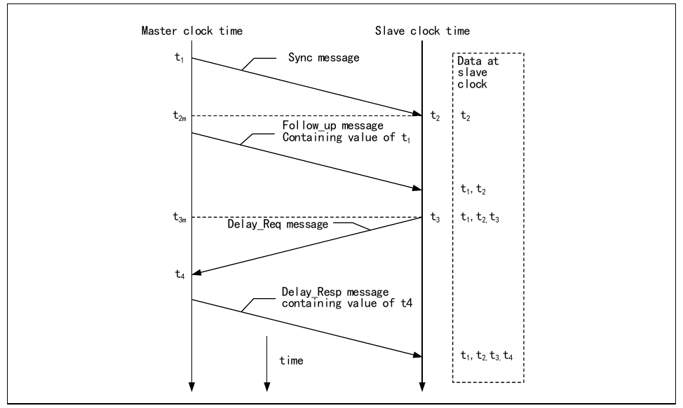
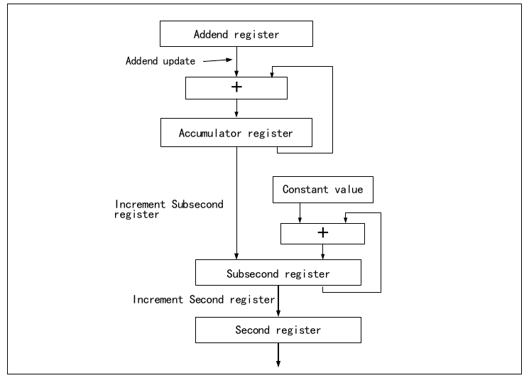
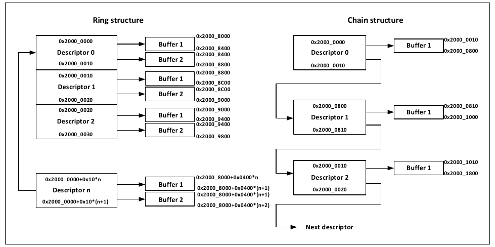
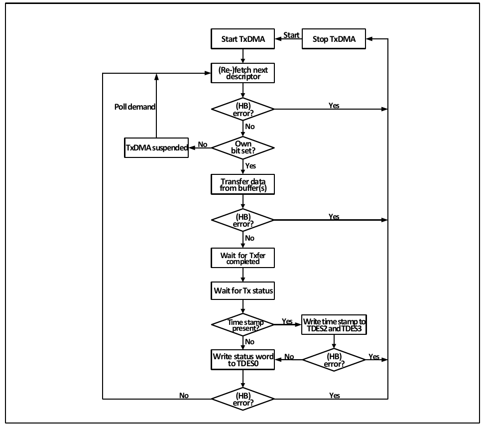
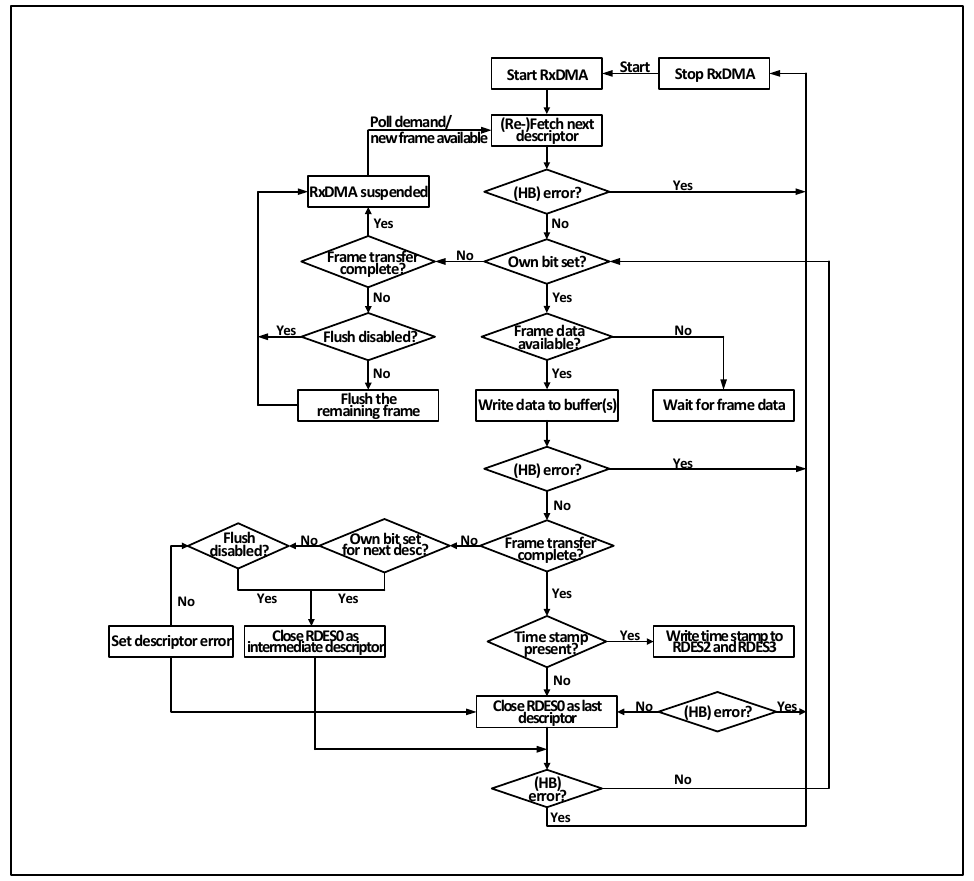

The product provides an Ethernet controller (MAC) compliant with the IEEE 802.3-2002 standard, acting as the data link layer, and also integrates a 10 Mbps and 100 Mbps Ethernet PHY physical layer transceiver, supporting speed auto-negotiation, enabling Ethernet communication on a single chip. In application, combined with a TCP/IP protocol stack interface, network products can be developed.
Using the MAC frame filter, perfect filtering or HASH filtering can be performed on the destination MAC address and source MAC address of received frames, and frames that do not pass filtering can be configured to be discarded, received, or marked in the receive descriptor. For details on this function, refer to the description of the MAC frame filter register (R32_ETH_MACFFR). The MAC has four built-in MAC address registers, of which MAC address register 0 is used by default to store the device's own MAC address, and the remaining three MAC address registers can be used for perfect filtering, comparing against the source or destination address of received frames. When R32_ETH_MACFFR:RA is set, all received frames will be received, but the corresponding status will be marked in the status field of the first word of the descriptor described later. If R32_ETH_MACFFR:PM is set, a similar effect occurs, but the status will not be marked. When R32_ETH_MACFFR:DAIF/SAIF is set, the result is inverted: frames that originally passed filtering will be discarded or marked, while frames that did not pass filtering will be transferred to the buffer in RAM.
The MAC uses the HPF bit and the HU bit to determine whether unicast frames are HASH-filtered or perfect-address-filtered.
The MAC uses the HPF bit and the HM bit to determine whether unicast frames are HASH-filtered or perfect-address-filtered. When the PAM bit is set, all multicast packets can pass through the filter.
By setting the BFD bit, the MAC can block all broadcast packets.
By setting the AE bit in the MAC address register, that MAC address register is enabled, and setting the SA bit determines whether the MAC address register is used as a source address sample or a destination address sample for comparison.
The filtering settings for the destination address and source address are shown in Table 29-1 and Table 29-2, respectively.
| Frame type | PM | HPF | HU | DAIF | HM | PAM | Effect |
|---|---|---|---|---|---|---|---|
| Broadcast | 1 | - | - | - | - | - | Pass |
| Broadcast | 0 | - | - | - | - | - | Not passed (BFD set) |
| Unicast | 1 | - | - | - | - | - | All frames pass |
| Unicast | 0 | - | 0 | 0 | - | - | Pass when perfect filter matches |
| Unicast | 0 | - | 0 | 1 | - | - | Not passed when perfect filter matches |
| Unicast | 0 | 0 | 1 | 0 | - | - | Pass when HASH filter matches |
| Unicast | 0 | 0 | 1 | 1 | - | - | Not passed when HASH filter matches |
| Unicast | 0 | 1 | 1 | 0 | - | - | Pass when perfect filter or HASH filter matches |
| Unicast | 0 | 1 | 1 | 1 | - | - | Not passed when perfect filter or HASH filter matches |
| Multicast | 1 | - | - | - | - | - | Pass |
| Multicast | - | - | - | - | - | 1 | Pass |
| Multicast | 0 | - | - | 0 | 0 | 0 | Pass when perfect filter matches |
| Multicast | 0 | 0 | - | 0 | 1 | 0 | Pass when HASH filter matches |
| Multicast | 0 | 1 | - | 0 | 1 | 0 | Pass when perfect filter or HASH filter matches |
| Multicast | 0 | - | - | 1 | 0 | 0 | Not passed when perfect filter matches |
| Multicast | 0 | 0 | - | 1 | 1 | 0 | Not passed when HASH filter matches |
| Multicast | 0 | 1 | - | 1 | 1 | 0 | Not passed when perfect filter or HASH filter matches |
| Frame type | RA | SAIF | SAF | Effect |
|---|---|---|---|---|
| Unicast | 1 | - | - | All frames pass |
| Unicast | 0 | 0 | 0 | Pass when perfect filter matches; mark but do not discard frames that do not pass |
| Unicast | 0 | 1 | 0 | Not passed when perfect filter matches; mark but do not discard frames that do not pass |
| Unicast | 0 | 0 | 1 | Pass when perfect filter matches; discard frames that do not pass |
| Unicast | 0 | 1 | 1 | Not passed when perfect filter matches; discard frames that do not pass |
The Management Counters (MMC) module primarily counts various indicators of frame receive/transmit status and MAC operation status. It can be configured to generate interrupts. In general, the "good" frame receive counter (MMCRGUFCR) can be used to obtain the number of intact frames currently received, the "good" frame transmit counter (MMCTGFCR) can be used to obtain the number of successfully transmitted frames, and the receive CRC error frame counter (MMCRFCECR) can be used to check whether there are frames received with CRC errors.
Users need to understand a concept: what constitutes a "good" frame. Under normal conditions, as long as a frame starts transmission, its frame length meets the requirement (with auto-padding enabled), and automatic CRC calculation is enabled, it is a "good" frame. For a received frame, as long as its CRC is correct, the frame length is within the Ethernet frame length range, the frame length is consistent with the value in the length field (if the length/type field indicates length), or there is no misalignment, it is considered a "good" received frame.
The PMT (Power Management) module's function is mainly to wake up the microcontroller from low-power mode via Ethernet. The Gigabit Ethernet controller supports two types of frames to wake up the system: magic frames and (remote) wake-up frames. When the Ethernet receives these two types of frames, since the microcontroller is in low-power mode, a receive interrupt is not necessarily generated even if the frame is valid. However, if the frame passes the MAC's magic frame and wake-up frame recognition, a PMT interrupt will be generated. The PMT interrupt is independent of the Ethernet interrupt; by querying the PMT control and status register, the type of Ethernet frame that caused the interrupt can be determined.
The magic packet (also known as magic packet) defined by AMD is a commonly used Ethernet frame to wake up a microcontroller. It has a fixed and special frame format: through frame filtering, the target network card can receive it; it can be encapsulated as a broadcast frame, containing 6 consecutive bytes of all-high (0xFF), followed by 16 repetitions of the target network card's MAC address. This combination can exist anywhere in the frame, so the magic frame can be encapsulated as a MAC frame, IP packet, or even a UDP packet. The following is the payload format of a magic frame.
xx xx xx xx xx xx xx xx (preceding data is unrestricted, may even be absent) — ff ff ff ff ff ff
84 c2 e4 01 02 02 84 c2 e4 01 02 02 84 c2 e4 01 02 02 84 c2 e4 01 02 02 84 c2 e4 01 02 02
84 c2 e4 01 02 02 84 c2 e4 01 02 02 84 c2 e4 01 02 02 84 c2 e4 01 02 02 84 c2 e4 01 02 02
84 c2 e4 01 02 02 84 c2 e4 01 02 02 84 c2 e4 01 02 02 84 c2 e4 01 02 02 84 c2 e4 01 02 02
84 c2 e4 01 02 02 xx xx xx xx xx xx (some network cards require a password appended at the end of the magic frame).
Since the magic frame format has limitations, the (remote) wake-up frame format can be user-defined. Any Ethernet frame that passes through the remote wake-up frame filter register group (ETH_MACRWUFFR) is considered a wake-up frame. Users define wake-up frames that meet their needs by configuring the remote wake-up frame filter register group. Note that the remote wake-up frame filter register group has only one address entry; users can write data into it through 8 consecutive write operations, and read back the previously written data through 8 consecutive read operations.
The structure of the remote wake-up frame filter register group is shown in the table below:
| Filter register 0 | Byte mask of filter register 0 | |||||||
| Filter register 1 | Byte mask of filter register 1 | |||||||
| Filter register 2 | Byte mask of filter register 2 | |||||||
| Filter register 3 | Byte mask of filter register 3 | |||||||
| Filter register 4 | Reserved | Reserved | Reserved | Reserved | Filter 3 command | Filter 2 command | Filter 1 command | Filter 0 command |
| Filter register 5 | Filter 3 offset | Filter 2 offset | Filter 1 offset | Filter 0 offset | ||||
| Filter register 6 | Filter 1 CRC-16 | Filter 0 CRC-16 | ||||||
| Filter register 7 | Filter 3 CRC-16 | Filter 2 CRC-16 |
As can be seen from the table above, the four domains — byte mask, command, offset, and filter — work together to determine whether a frame is a remote wake-up frame. In practice, four different frames satisfying the requirements can be configured.
The most significant bit of the 32-bit byte mask must be 0. Bits [30:0] correspond to the first 31 bytes of data as defined by the offset domain. If a bit is set to 1, the corresponding byte participates in the CRC-16 calculation, with a maximum of 31 bytes participating in the calculation.
The most significant bit of the 4-bit command domain indicates the frame type to which it applies: 1 means valid only for multicast addresses, 0 means valid only for unicast addresses. Bits 2 and 1 of the command domain are reserved. Bit 0 is the enable bit; when set high, this group of filters is enabled.
The offset domain indicates how many bytes from the beginning of the frame header to start calculating the CRC-16 value. The minimum value is 12. If the offset domain is 12, CRC-16 calculation starts from the 13th byte (the parameter model uses CRC-16-IBM with default parameters).
The filter stores the user's expected CRC result value. The MAC compares the CRC-16 value it calculates with the value in this domain. If they match, the frame is identified as a (remote) wake-up frame. If the wake-up frame interrupt and PMT interrupt are enabled, a PMT interrupt will also be generated.
Additionally, according to the bit definitions of the PMT control and status register, if the GU bit is set, unicast frames that pass frame filtering will also be considered wake-up frames.
The IEEE 1588 standard defines a precise protocol for obtaining time, with the goal of achieving time synchronization within 10 microseconds of error. Although the NTP protocol could already achieve time synchronization at the 200-microsecond level, this level was insufficient to meet the time synchronization requirements in industrial automation. Therefore, the Network Precision Clock Synchronization Committee drafted the PTP protocol, which was approved by the IEEE Standards Committee at the end of 2002 as the IEEE 1588 standard.
Implementing the PTP protocol requires both the master and slave to accurately record the times at which the MAC receives and transmits Ethernet frames, which requires both the master and slave to have their own high-precision time counters. Then, master and slave devices supporting PTP perform a time synchronization procedure through which the slave can determine and correct its time difference with the master. The figure below shows the master-slave time synchronization procedure.

The master sends a Sync message to the slave; the slave receives this message and records the local time t2 when the Sync message is received.
The master sends a Follow_up message to the slave, containing the master time t1 when the master sent the Sync message.
The slave sends a Delay_Req message to the master; the slave records the send time t3.
The master sends a Delay_Resp message to the slave, containing the receive time t4 of the Delay_Req message.
In actual use, the master sends a Sync message once every two seconds, and each Sync message can be considered the Follow_up message of the previous Sync message, both carrying the send time of the previous Sync message. Through this process, the slave can determine the network delay time Tdelay from the master network to the slave network, and then calculate the time offset between the master time and the slave time.
$$Tdelay = \frac{(t2-t1) + (t4-t3)}{2}$$
Any time sent by the master minus the offset gives the master's time.
The PTP synchronization procedure is generally implemented using the UDP protocol, though users can also implement it with a custom protocol. PTP is highly dependent on the delay stability of the internal network.
To implement PTP on the master, the device needs a local high-precision time counter, at least accurate to the nanosecond level. The PTP module of the microcontroller's Gigabit Ethernet controller has a 32-bit seconds counter and a 31-bit sub-seconds counter. When the sub-seconds counter overflows, the seconds counter increments, so the local time resolution can reach approximately 0.46 nanoseconds.
Local time can be updated in two ways: coarse adjustment and fine adjustment. In coarse adjustment, the update timing is determined externally. When a time update is needed, the time update bit (PTPTSCR:TSSTU) in the timestamp control register is set, and the microcontroller's PTP module will subtract or add the value of the timestamp update register (TSHUR, TSLUR) to/from the seconds counter and sub-seconds counter. Coarse adjustment is a simpler and more convenient time update mechanism, but with poorer precision.
Fine adjustment is the more commonly used time update method. Its update procedure is as follows:

Using fine adjustment mode requires a clear understanding of the system main frequency and the fine adjustment procedure. Unlike coarse adjustment, the fine adjustment update event timing is triggered by an overflow of the accumulator (32-bit, not listed in the register list; shown as "Accumulator register" in the figure). The accumulator increments by the value of the addend register (PTPTSAR, shown as "Addend register" in the figure) on every system main clock cycle. Once it overflows, a time update event is generated: the value of the sub-second increment register (PTPSSIR, shown as "Constant value" in the figure) is added to the sub-seconds counter (Subsecond register), completing the time update. When the sub-seconds counter overflows, the seconds counter increments. In practice, the time for one sub-seconds counter increment is 1/(2^31) = 0.46566128730... nanoseconds. The user must ensure that the time for the accumulator to overflow equals the value of the sub-second increment register multiplied by the time for one sub-seconds counter increment.
Local time correction is relatively simple: by setting the time correction bit (PTPTSCR:TSSTI) in the timestamp control register, the seconds counter and sub-seconds counter values will be replaced by the values of the timestamp update counter (TSHUR, TSLUR).
The advantage of the Ethernet transceiver is its high speed and large throughput. To maintain this advantage, CPU intervention during the Ethernet frame receive/transmit process must be minimized. This is where the Ethernet transceiver dedicated DMA is used.
The DMA used by Ethernet is 32-bit. It is managed by the CPU through two types of data structures: traditional control and status registers, and receive/transmit descriptors. Since the DMA is 32-bit wide, the base address of the receive/transmit descriptor queue in RAM must be 4-byte aligned. The receive/transmit buffers have no alignment requirement.
Users typically operate traditional peripherals by writing control bits to registers and reading status registers to obtain the peripheral's status and return information. These registers exist independently of the core, SRAM, and non-volatile memory; they are physically present and can be called "hardware registers." Traditional communication peripherals, such as USART or SPI, have a data register to temporarily store transmitted/received data, and a set of DMA to uniformly save all received data to a specific address space.
However, the Ethernet transceiver, with its extremely high data transfer speed, enormous data throughput, and unique data frame organization, operates differently from traditional communication transceivers. The Ethernet transceiver receives large amounts of data as densely as possible. It must store the received data stream into separate memory spaces in units of frames, autonomously completing receive and transmit operations so that the CPU can read and process this data with minimal operations, freeing the corresponding memory space, and ensuring that the DMA controller and CPU do not conflict over memory access rights. The individual size of the buffer opened in memory to temporarily store Ethernet frames is generally set to the maximum packet length of an Ethernet frame, which IEEE 802.3 specifies as 1518 bytes (including the source/destination hardware address, length/type field, and CRC32 checksum field, totaling 18 bytes). The number of Ethernet frame transmit/receive buffers is determined by the user based on the actual interaction frequency and microcontroller memory resources.
Ethernet frame buffers are organized in a queue-like manner. In the receive direction, Ethernet frames are enqueued as the DMA writes them into memory via the MAC, and dequeued as the CPU reads them. In the transmit direction, Ethernet frames are enqueued as the CPU writes them into memory, and dequeued as the DMA reads them and pushes them into the transmit FIFO. The queue depth is the number of buffers. Unlike ordinary communication peripherals, the start address and number of Ethernet frame buffers are not fixed in a specific register, but are managed by a special type of data structure. This data structure is stored in memory; a single such data structure unit manages one buffer, storing the buffer's start address, length, the settings the DMA controller needs when invoking this buffer, the transmit status written back by the DMA upon transmit completion, and the address of the next such data structure. This data structure serves the role of traditional communication peripheral control/status registers, but is physically located in memory, so it can be called a "software register," formally known as a "DMA descriptor."
DMA descriptors are divided into transmit and receive types, each with a fixed format. The storage structure of DMA descriptors comes in two forms: one is the linked-list form, where the fourth word of each descriptor holds the address of the next descriptor, and the DMA controller reads the next descriptor directly from TDes3/RDes3. The other is the ring structure, where all descriptors must be tightly packed, and the DMA controller takes the next descriptor from the position immediately following the current descriptor. When the DMA controller detects the TER/RER bit set in TDes4/RDes4, it takes the next descriptor from the beginning of the descriptor list. The descriptor array address must be 4-byte aligned, and a single descriptor is 16 bytes in size.
Figure 29-3 describes a buffer allocation scheme for the ring structure and the chained structure, respectively, for reference when users allocate space.

Table 29-4 shows the structure of the transmit descriptor.
| 31 | 30:26 | 25 | 23:20 | 19:18 | 17 | 16:0 | |
|---|---|---|---|---|---|---|---|
| TDes0 | OWN (31) | CTRL (30:26) | TTSE (25) | Control (23:20) | Reserved (19:18) | TTSS (17) | Status (16:0) |
| TDes1 | Reserved (31:29) | Buffer 2 byte count (28:16) | Reserved (15:13) | Buffer 1 byte count (12:0) | |||
| TDes2 | Buffer 1 address / timestamp low | ||||||
| TDes3 | Buffer 2 address / next descriptor address / timestamp high | ||||||
As can be seen from the table above, the transmit descriptor consists of four 32-bit words: TDes0, TDes1, TDes2, and TDes3. TDes0 is used for control and returning transmit status, TDes1 indicates the transmit length, TDes2 indicates the transmit buffer location or returns the low part of the transmit timestamp, and TDes3 indicates the address of the second transmit buffer (when TCH is not set) or the address of the next descriptor (when TCH is set). When timestamp is enabled, it returns the high part of the IEEE1588 timestamp after transmission. The descriptions of each 32-bit word are as follows.
| 31 | 30 | 29 | 28 | 27 | 26 | 25 | 24 | 23:22 | 21 | 20 | 19:18 | 17 | 16 |
|---|---|---|---|---|---|---|---|---|---|---|---|---|---|
| OWN | IC | LS | FS | DC | DP | TTE | Res | CIC | TER | TCH | Res | TSS | IHE |
| 15 | 14 | 13 | 12 | 11 | 10 | 9 | 8 | 7 | 6:3 | 2 | 1 | 0 | |
| ES | JT | FF | IPE | LCA | NC | LCO | EC | VF | CC | ED | UF | DB |
| Bits | Name | Access | Description | Reset |
|---|---|---|---|---|
| 31 | OWN | R/W | Descriptor ownership bit. This bit indicates who owns this descriptor. 0: this descriptor is owned by the CPU, which can modify the descriptor's value; 1: this descriptor is owned by the DMA, and the CPU has no permission to modify it. When this bit is 0, after the CPU completes operations on the descriptor and buffer, the CPU sets it to 1. When this bit is 1, after the DMA completes operations on the descriptor and buffer, the DMA automatically writes 0. This completes the handover of descriptor and buffer operations between user software and hardware. | - |
| 30 | IC | R/W | Transmit completion interrupt enable bit. When set, after the current frame is transmitted, the transmit interrupt flag bit (ETH_DMASR:TS) will be set. | - |
| 29 | LS | R/W | Last segment indicator. When set, this descriptor's buffer contains the end portion of the frame. | - |
| 28 | FS | R/W | First segment indicator. When set, this descriptor's buffer contains the beginning portion of the frame. | - |
| 27 | DC | R/W | Disable automatic CRC calculation. When set, the DMA controller will not calculate the CRC32 checksum of the Ethernet frame, and no value will be appended to the end of the frame. This bit is only valid when the FS bit is set. Additionally, the DP bit setting takes priority over this bit. | - |
| 26 | DP | R/W | Disable automatic padding. When set, the DMA controller will not add automatic padding for Ethernet frames shorter than 64 bytes. When this bit is 0, the DMA will automatically add padding and CRC checksum for Ethernet frames shorter than 64 bytes, regardless of whether DC is set. | - |
| 25 | TTE | R/W | Timestamp transmit enable. When ETH_PTPTSCR:TSE is set, setting this bit enables the IEEE1588 timestamp function for the Ethernet frame indicated by the current descriptor. This bit is only valid when FS is set. | - |
| 24 | Reserved | - | Unused. | - |
| [23:22] | CIC | R/W | Checksum insertion control field. 00: disable checksum insertion; 01: enable IP header checksum calculation and insertion only; 10: reserved; 11: enable IP header checksum and payload checksum calculation and insertion, enable pseudo-header checksum calculation. | - |
| 21 | TER | R/W | Transmit descriptor end flag. When set by the user, it indicates to the DMA controller that the current transmit descriptor is the last one in the transmit descriptor array. The DMA controller will read the first descriptor in the transmit descriptor array next time. | - |
| 20 | TCH | R/W | Next descriptor address valid indicator. When set, the second address is the address of the next descriptor rather than the address of the next buffer. When set, the TBS2 field value has no effect. This bit is only valid when FS is set. The TER bit takes priority over this bit. | - |
| [19:18] | Reserved | - | Unused. | - |
| 17 | TSS | R | Transmit timestamp capture status. The DMA controller sets this bit to indicate that the transmit timestamp has been captured and stored in TDes6 and TDes7. | - |
| 16 | IHE | R | IP header error status. The DMA controller checks the IP header against the received data: for IPv4, the DMA controller checks whether the header length field is correct; for IPv6, the DMA controller checks whether the header is 40 bytes. Additionally, the IP protocol type must be consistent with the type/length field in the Ethernet frame. | - |
| 15 | ES | R | Error summary. If an error is encountered during frame transmission, the DMA controller sets this bit. The ES bit is set when any of the following bits is set: UF [TDES0:1] data underflow error; IPE [TDES0:12] IP data error; FF [TDES0:13] frame flush; JT [TDES0:14] jabber timeout; IHE [TDES0:16] IP header error. | - |
| 14 | JT | R | Jabber timeout. When set, it indicates that a jabber timeout error occurred at the MAC transmit side. This bit is only set when the JD bit (ETH_MACCR:22) is not set. | - |
| 13 | FF | R | Frame flush. When set, it indicates that the DMA controller flushed the frame from the FIFO due to a CPU command. | - |
| 12 | IPE | R | IP header error indicator. The MAC compares the total packet length in the IPv4 or IPv6 header of received TCP/UDP/ICMP packets with the actual packet length; if they do not match, this bit is set. | - |
| 11 | LCA | R | Loss of carrier indicator. When set, it indicates that a carrier was lost during frame transmission, i.e., the CSR signal was in an invalid state. This bit only takes effect in half-duplex mode. | - |
| 10 | NC | R | No carrier indicator. This bit indicates that the physical layer carrier sense signal was invalid during frame transmission. This bit only takes effect in half-duplex mode. | - |
| 9 | LCO | R | Late collision indicator. This bit indicates that a collision occurred after the preamble was transmitted. This bit only takes effect in half-duplex mode. | - |
| 8 | EC | R | Excessive collision indicator. This bit indicates that more than 16 collisions occurred during frame transmission. If the RD bit of MACCR is set, this bit indicates only a single collision. This bit only takes effect in half-duplex mode. | - |
| 7 | VF | R | VLAN bit. This bit is set when transmitting a VLAN frame. | - |
| [6:3] | CC | R | Collision counter field. This field indicates the number of collisions that occurred during frame transmission. Invalid when EC is set. This field only takes effect in half-duplex mode. | - |
| 2 | ED | R | Excessive deferral indicator. When set, it indicates that when the DC bit of MACCR is set, frame transmission failed due to deferral exceeding 24288 bits. This bit only takes effect in half-duplex mode. | - |
| 1 | UF | R | Data underflow error. When the DMA controller finds the buffer empty while fetching data from the specified RAM during transmission, transmission enters a suspended state, and this bit and the relevant bits of the DMASR register are set. | - |
| 0 | DB | R | Deferral indicator. When set, it indicates that the transmission process failed due to carrier occupation. This bit only takes effect in half-duplex mode. | - |
| 31 | 30 | 29 | 28 | 27 | 26 | 25 | 24 | 23 | 22 | 21 | 20 | 19 | 18 | 17 | 16 |
|---|---|---|---|---|---|---|---|---|---|---|---|---|---|---|---|
| Reserved | TBS2 | ||||||||||||||
| 15 | 14 | 13 | 12 | 11 | 10 | 9 | 8 | 7 | 6 | 5 | 4 | 3 | 2 | 1 | 0 |
| Reserved | TBS1 | ||||||||||||||
| Bits | Name | Access | Description | Reset |
|---|---|---|---|---|
| [31:29] | Reserved | - | Unused. | - |
| [28:16] | TBS2 | R/W | Size of transmit buffer 2. | - |
| [15:13] | Reserved | - | Unused. | - |
| [12:0] | TBS1 | R/W | Size of transmit buffer 1. | - |
| 31 | 30 | 29 | 28 | 27 | 26 | 25 | 24 | 23 | 22 | 21 | 20 | 19 | 18 | 17 | 16 |
|---|---|---|---|---|---|---|---|---|---|---|---|---|---|---|---|
| TBAD1/TTSL | |||||||||||||||
| 15 | 14 | 13 | 12 | 11 | 10 | 9 | 8 | 7 | 6 | 5 | 4 | 3 | 2 | 1 | 0 |
| TBAD1/TTSL | |||||||||||||||
| Bits | Name | Access | Description | Reset |
|---|---|---|---|---|
| [31:0] | TBAD1/TTSL | R/W | The entire 32 bits of TDes2 are used as a single unit to store the address of transmit buffer 1. In IEEE1588 mode enabled, after transmission is completed, TDes2 is also used to store the timestamp returned by the MAC, and the MAC clears the OWN bit (TDes0:31). This field stores the low 32 bits of the timestamp. | - |
| 31 | 30 | 29 | 28 | 27 | 26 | 25 | 24 | 23 | 22 | 21 | 20 | 19 | 18 | 17 | 16 |
|---|---|---|---|---|---|---|---|---|---|---|---|---|---|---|---|
| TDAD2/TTSH | |||||||||||||||
| 15 | 14 | 13 | 12 | 11 | 10 | 9 | 8 | 7 | 6 | 5 | 4 | 3 | 2 | 1 | 0 |
| TDAD2/TTSH | |||||||||||||||
| Bits | Name | Access | Description | Reset |
|---|---|---|---|---|
| [31:0] | TDAD2/TTSH | R/W | This field is used to store the address of the next descriptor. When TCH is not set, this field stores the address of transmit buffer 2. In IEEE1588 mode enabled, after transmission is completed, TDes3 is used to store the timestamp returned by the MAC, and the MAC clears the OWN bit (TDes0:31). This field stores the high 32 bits of the timestamp. | - |
| 31 | 30:0 | |||||
|---|---|---|---|---|---|---|
| RDes0 | OWN (31) | Status (30:0) | ||||
| RDes1 | Control (31) | Reserved (30:29) | Buffer 2 byte count (28:16) | RER (15:14) | 13 | Reserved (12:0) |
| RDes2 | Buffer 1 address, timestamp low | |||||
| RDes3 | Buffer 2 address, next descriptor address, timestamp high | |||||
As can be seen from the figure above, the receive descriptor also consists of four 32-bit words. The first 32-bit word mainly returns the receive status, the second 32-bit word contains the received data length, the third 32-bit word defines the receive buffer address or returns the low part of the timestamp, and the fourth 32-bit word holds the second buffer address (when RCH is not set), the next descriptor address (when RCH is set), or returns the high part of the timestamp.
The meaning of each bit in the receive descriptor words is as follows:
| 31 | 30 | 29:16 | |||||||||||||
|---|---|---|---|---|---|---|---|---|---|---|---|---|---|---|---|
| OWN | AFM | FL | |||||||||||||
| 15 | 14 | 13 | 12 | 11 | 10 | 9 | 8 | 7 | 6 | 5 | 4 | 3 | 2 | 1 | 0 |
| ES | DE | SAF | LE | OE | VLAN | FS | LS | IPHCE | LCO | PT | RWT | RE | DE | CE | PCE |
| Bits | Name | Access | Description | Reset |
|---|---|---|---|---|
| 31 | OWN | R/W | Descriptor ownership bit. This bit indicates who owns this descriptor. 0: this descriptor is owned by the CPU, which can modify the descriptor's value; 1: this descriptor is owned by the DMA, and the CPU has no permission to modify it. When this bit is 0, after the CPU completes operations on the descriptor and buffer, the CPU sets it to 1. When this bit is 1, after the DMA completes operations on the descriptor and buffer, the DMA automatically writes 0. This completes the handover of descriptor and buffer operations between user software and hardware. | - |
| 30 | AFM | R | Destination address filter fail flag. If the received frame did not pass the MAC's destination address filter, this flag is set. | - |
| [29:16] | FL | R | Frame length field. This field is valid when the ES bit [RDes0:15] is 0. When the LS bit [RDes0:8] is 1, this field indicates the length of the frame received by the DMA controller, including CRC. When the LS bit is 0, this field indicates the cumulative length transferred to memory by the DMA controller so far, in bytes. | - |
| 15 | ES | R | Error summary. When the MAC detects any of the following errors, it sets this bit: CE [RDes0:1] CRC error; RE [RDes0:3] receive error; RWT [RDes0:4] watchdog timeout; IPHCE [RDes0:7] giant frame (note: when IPHCE is reported, it is necessary to distinguish whether it is a giant frame or an IP header error); OE [RDes0:11] overflow error; DE [RDes0:14] descriptor error. | - |
| 14 | DE | R | Descriptor error bit. When set, it indicates that the frame could not fit in the buffer indicated by the descriptor and was truncated, and the DMA does not own the next descriptor. This bit is only valid when the LS bit [RDes0:8] is set. | - |
| 13 | SAF | R | Source address filter fail flag. When set, it indicates that the frame did not pass the MAC's source address filter. | - |
| 12 | LE | R | Length error bit. When set, it indicates that the actual received frame length does not match the length indicated in the Ethernet type/length field. This bit is only valid when the FT bit [RDes0:5] is set. | - |
| 11 | OE | R | Overflow error bit. When set, it indicates that the received frame was corrupted due to receive FIFO overflow. | - |
| 10 | VLAN | R | VLAN tag bit. When set, it indicates that the received frame is a VLAN frame. | - |
| 9 | FS | R | First descriptor indicator. When set, this descriptor contains the beginning of the frame. | - |
| 8 | LS | R | Last descriptor indicator. When set, this descriptor contains the end of the frame. | - |
| 7 | IPHCE | R | IP header checksum error flag. When set, it indicates an error in the IPv4 or IPv6 header. Possible causes: 1. The protocol indicated by the Ethernet frame type/length field does not match the actual IP version; 2. The IP header checksum is incorrect; 3. The length indicated in the IP header is incorrect. | - |
| 6 | LCO | R | Late collision indicator. When set, it indicates that a late collision occurred. This bit only takes effect in half-duplex mode. | - |
| 5 | FT | R | Frame type indicator. When 1, the received frame is an Ethernet type-encapsulated frame (RFC 894). When 0, the received frame is an IEEE 802.3 type-encapsulated frame (RFC 1042). When the frame length is less than 14 bytes, this bit is invalid. Note: The special meaning of FT is described in Table 29-11. | - |
| 4 | RWT | R | Receive watchdog timeout flag. When set, it indicates that a watchdog timeout occurred while receiving the current frame, and the current frame was truncated. | - |
| 3 | RE | R | Receive error flag. When set, it indicates that the RX_ERR signal was active while RX_DV was valid during frame reception. | - |
| 2 | DE | R | Dribble bit error. When set, it indicates that the frame received by the MAC has a length that is not an integer multiple of 8 bits, possibly due to missed clock cycles. | - |
| 1 | CE | R | CRC error. When set, it indicates that the received frame has a CRC checksum error. This bit is only valid when the LS bit [RDes0:8] is set. | - |
| 0 | PCE | R | Payload checksum error. When set, it indicates that the TCP/UDP/ICMP packet received by the MAC does not match the value indicated in its checksum field. | - |
As can be seen, the MAC's receive process includes a checksum verification mechanism. In fact, the Ethernet frame layer (data link layer), network layer (IPv4/IPv6), and transport layer (TCP/UDP/SCTP) all specify their own data lengths and perform some form of verification on data correctness. Bits 0, 5, and 7 of RDes0 all mention data checksum verification, summarized in the table below.
| RDes0:5 (FT) | RDes0:7 (IPHCE) | RDes0:0 (PCE) | Frame status |
|---|---|---|---|
| 1 | 0 | 0 | IP type frame, no IP header or payload checksum errors detected |
| 1 | 0 | 1 | IP type frame, payload checksum error |
| 1 | 1 | 0 | IP type frame, IP header checksum error |
| 1 | 1 | 1 | IP type frame, IP header checksum error, payload checksum error |
| 0 | 0 | 0 | IEEE 802.3 type-encapsulated frame (RFC 1042) |
| 0 | 0 | 1 | IP type frame, no IP header checksum error detected; payload checksum not checked due to unsupported |
| 0 | 1 | 1 | Not an IP type frame (e.g., ARP frame) |
| 0 | 1 | 0 | Reserved |
| 31 | 30 | 29 | 28 | 27 | 26 | 25 | 24 | 23 | 22 | 21 | 20 | 19 | 18 | 17 | 16 |
|---|---|---|---|---|---|---|---|---|---|---|---|---|---|---|---|
| DIC | Reserved | RBS2 | |||||||||||||
| 15 | 14 | 13 | 12 | 11 | 10 | 9 | 8 | 7 | 6 | 5 | 4 | 3 | 2 | 1 | 0 |
| RER | RCH | Res | RBS1 | ||||||||||||
| Bits | Name | Access | Description | Reset |
|---|---|---|---|---|
| 31 | DIC | R/W | Disable receive completion interrupt setting. | - |
| [30:29] | Reserved | - | Unused. | - |
| [28:16] | RBS2 | R/W | Receive buffer 2 size. | - |
| 15 | RER | R/W | End of receive descriptor list flag. Indicates that the current descriptor is the last descriptor. The DMA controller returns to the descriptor list base address register (ETH_DMARDLAR) to fetch the next descriptor. | - |
| 14 | RCH | R/W | Next receive descriptor address valid bit. When set, the last 32-bit word contains the address of the next receive descriptor; otherwise it is the address of the second buffer. | - |
| 13 | Reserved | - | Unused. | - |
| [12:0] | RBS1 | R/W | Receive buffer 1 size. | - |
| 31 | 30 | 29 | 28 | 27 | 26 | 25 | 24 | 23 | 22 | 21 | 20 | 19 | 18 | 17 | 16 |
|---|---|---|---|---|---|---|---|---|---|---|---|---|---|---|---|
| RBAD1/RTSL | |||||||||||||||
| 15 | 14 | 13 | 12 | 11 | 10 | 9 | 8 | 7 | 6 | 5 | 4 | 3 | 2 | 1 | 0 |
| RBAD1/RTSL | |||||||||||||||
| Bits | Name | Access | Description | Reset |
|---|---|---|---|---|
| [31:0] | RBAD/RTSL | R/W | The entire 32 bits of RDes2 are used as a single unit to store the receive buffer address. In IEEE1588 mode enabled, after reception is completed, RDes2 is also used to store the timestamp returned by the MAC, and the MAC clears the OWN bit [RDes0:31]. | - |
| 31 | 30 | 29 | 28 | 27 | 26 | 25 | 24 | 23 | 22 | 21 | 20 | 19 | 18 | 17 | 16 |
|---|---|---|---|---|---|---|---|---|---|---|---|---|---|---|---|
| RDAD2/RTSH | |||||||||||||||
| 15 | 14 | 13 | 12 | 11 | 10 | 9 | 8 | 7 | 6 | 5 | 4 | 3 | 2 | 1 | 0 |
| RDAD2/RTSH | |||||||||||||||
| Bits | Name | Access | Description | Reset |
|---|---|---|---|---|
| [31:0] | RDAD/RTSH | R/W | When RCH is set, this field stores the address of the next descriptor; otherwise it stores the address of the second buffer. In IEEE1588 mode enabled, after reception is completed, RDes3 is used to store the timestamp returned by the MAC, and the MAC clears the OWN bit [RDes0:31]. This field stores the high 32 bits of the timestamp. | - |
Since the transmit/receive buffers and transmit/receive descriptors are both invoked by the DMA controller and physically reside in RAM space, and the DMA is 32-bit, the start address of the transmit/receive descriptor queues must be placed at 4-byte aligned positions. However, this alignment requirement is not mandatory for buffers.
For efficiency, it is most appropriate to receive an entire Ethernet frame in one buffer. Setting the buffer to 1518 bytes can accommodate the maximum standard Ethernet frame, including the source/destination address field, length/type field, data padding field, and CRC checksum field. Note that the maximum frame length of a tagged VLAN frame is 4 bytes longer than a standard Ethernet frame, i.e., 1522 bytes. If the user wants to achieve 4-byte alignment, a buffer can be 1524 bytes.
The DMA is responsible for automatically transferring and pushing transmit and receive data. However, if a fatal error is encountered, the DMA will stop operating and update the DMA status register. The user needs to re-initialize the DMA and manually start it to resume operation.
The steps for the DMA controller to establish the operation mechanism are as follows:
The figure below shows the default transmit flow.

The steps to establish the DMA receive operation mechanism are as follows:
The figure below shows the default receive operation mechanism:

The Ethernet transceiver has two interrupt vectors: one for Ethernet wake-up events and the other for normal transmit/receive events. When a wake-up frame or magic frame is detected, the Ethernet wake-up event is triggered. Normal Ethernet transmit/receive interrupt events include DMA interrupts and ETH interrupts.
MAC control related register address mapping.
The physical base address of the MAC control related registers is: 0x4002 8000
| Name | Address | Description | Reset Value |
|---|---|---|---|
| R32_ETH_MACCR | 0x40028000 | MAC control register | 0x00000000 |
| R32_ETH_MACFFR | 0x40028004 | MAC frame filter register | 0x00000000 |
| R32_ETH_MACHTHR | 0x40028008 | Hash table register high | 0x00000000 |
| R32_ETH_MACHTLR | 0x4002800C | Hash table register low | 0x00000000 |
| R32_ETH_MACMIIAR | 0x40028010 | MII address register | 0x00000000 |
| R32_ETH_MACMIIDR | 0x40028014 | MII data register | 0x00000000 |
| R32_ETH_MACFCR | 0x40028018 | MAC flow control register | 0x00000000 |
| R32_ETH_MACVLAN | 0x4002801C | VLAN tag register | 0x00000000 |
| R32_ETH_MACRWUFFR | 0x40028028 | Remote wake-up frame filter register | 0x00000000 |
| R32_ETH_MACPMTCSR | 0x4002802C | PMT control and status register | 0x00000000 |
| R32_ETH_MACSR | 0x40028038 | MAC interrupt status register | 0x00000000 |
| R32_ETH_MACIMR | 0x4002803C | MAC interrupt mask register | 0x00000000 |
| R32_ETH_MACA0HR | 0x40028040 | MAC address 0 high 32 bits | 0x8000FFFF |
| R32_ETH_MACA0LR | 0x40028044 | MAC address 0 low 32 bits | 0xFFFFFFFF |
| R32_ETH_MACA1HR | 0x40028048 | MAC address 1 high 32 bits | 0x0000FFFF |
| R32_ETH_MACA1LR | 0x4002804C | MAC address 1 low 32 bits | 0xFFFFFFFF |
| R32_ETH_MACA2HR | 0x40028050 | MAC address 2 high 32 bits | 0x0000FFFF |
| R32_ETH_MACA2LR | 0x40028054 | MAC address 2 low 32 bits | 0xFFFFFFFF |
| R32_ETH_MACA3HR | 0x40028058 | MAC address 3 high 32 bits | 0x0000FFFF |
| R32_ETH_MACA3LR | 0x4002805C | MAC address 3 low 32 bits | 0xFFFFFFFF |
| R32_ETH_PHY_CR | 0x40028080 | PHY configuration register | 0x40000001 |
MMC control related register address mapping. Note: addresses are non-contiguous.
The physical base address of the MMC control related registers is: 0x4002 8100
| Name | Address | Description | Reset Value |
|---|---|---|---|
| R32_ETH_MMCCR | 0x40028100 | MMC control register | 0x00000000 |
| R32_ETH_MMCRIR | 0x40028104 | MMC receive interrupt register | 0x00000000 |
| R32_ETH_MMCTIR | 0x40028108 | MMC transmit interrupt register | 0x00000000 |
| R32_ETH_MMCRIMR | 0x4002810C | MMC receive interrupt mask register | 0x00000000 |
| R32_ETH_MMCTIMR | 0x40028110 | MMC transmit interrupt mask register | 0x00000000 |
| R32_ETH_MMCTGFSCCR | 0x4002814C | MMC transmit good frames single collision counter register | 0x00000000 |
| R32_ETH_MMCTGFMSCCR | 0x40028150 | MMC transmit good frames more than single collision counter register | 0x00000000 |
| R32_ETH_MMCTGFCR | 0x40028168 | MMC transmit good frames counter register | 0x00000000 |
| R32_ETH_MMCRFCECR | 0x40028194 | MMC receive CRC error frame counter register | 0x00000000 |
| R32_ETH_MMCRFAECR | 0x40028198 | MMC receive alignment error frame counter register | 0x00000000 |
| R32_ETH_STATE | 0x400281A0 | Ethernet state machine register | 0x00000000 |
| R32_ETH_MMCRGUFCR | 0x400281C4 | MMC receive good unicast frame counter register | 0x00000000 |
IEEE 1588 (PTP) related register address mapping.
The physical base address of the IEEE 1588 (PTP) related registers is: 0x4002 8700
| Name | Address | Description | Reset Value |
|---|---|---|---|
| R32_ETH_PTPTSCR | 0x40028700 | PTP timestamp control register | 0x00000000 |
| R32_ETH_PTPSSIR | 0x40028704 | PTP sub-second increment register | 0x00000000 |
| R32_ETH_PTPTSHR | 0x40028708 | PTP timestamp register high | 0x00000000 |
| R32_ETH_PTPTSLR | 0x4002870C | PTP timestamp register low | 0x00000000 |
| R32_ETH_PTPTSHUR | 0x40028710 | PTP timestamp update register high | 0x00000000 |
| R32_ETH_PTPTSLUR | 0x40028714 | PTP timestamp update register low | 0x00000000 |
| R32_ETH_PTPTSAR | 0x40028718 | PTP timestamp addend register | 0x00000000 |
| R32_ETH_PTPTTHR | 0x4002871C | PTP target time register high 32 bits | 0x00000000 |
| R32_ETH_PTPTTLR | 0x40028720 | PTP target time register low 32 bits | 0x00000000 |
DMA related register address mapping. Note: addresses are non-contiguous.
The physical base address of the DMA related registers is: 0x4002 9000
| Name | Address | Description | Reset Value |
|---|---|---|---|
| R32_ETH_DMABMR | 0x40029000 | DMA bus mode register | 0x00000001 |
| R32_ETH_DMATPDR | 0x40029004 | DMA transmit poll demand register | 0x00000000 |
| R32_ETH_DMARPDR | 0x40029008 | DMA receive poll demand register | 0x00000000 |
| R32_ETH_DMARDLAR | 0x4002900C | DMA receive descriptor list address register | 0x00000000 |
| R32_ETH_DMATDLAR | 0x40029010 | DMA transmit descriptor list address register | 0x00000000 |
| R32_ETH_DMASR | 0x40029014 | DMA status register | 0x00000000 |
| R32_ETH_DMAOMR | 0x40029018 | DMA operation mode register | 0x00000000 |
| R32_ETH_DMAIER | 0x4002901C | DMA interrupt enable register | 0x00000000 |
| R32_ETH_DMAMFBOCR | 0x40029020 | DMA missed frame and buffer overflow counter register | 0x00000000 |
| R32_ETH_DMACHTDR | 0x40029048 | DMA current transmit descriptor register | 0x00000000 |
| R32_ETH_DMACHRDR | 0x4002904C | DMA current receive descriptor register | 0x00000000 |
| R32_ETH_DMACHTBAR | 0x40029050 | DMA current transmit buffer address register | 0x00000000 |
| R32_ETH_DMACHRBAR | 0x40029054 | DMA current receive buffer address register | 0x00000000 |
The offset addresses of the internal PHY registers are used in the SMI interface. All PHY related registers are configured through the R32_ETH_MACMIIAR and R32_ETH_MACMIIDR registers.
Internal 10M/100M physical layer related register addresses.
| Name | Offset Address | Description | Reset Value |
|---|---|---|---|
| R16_BMCR | 0x00 | Basic control register | 0x3100 |
| R16_BMSR | 0x01 | Basic status register | 0x7849 |
| R16_PHYIDR1 | 0x02 | PHY identifier register 1 | 0x7371 |
| R16_PHYIDR2 | 0x03 | PHY identifier register 2 | 0x9011 |
| R16_ETH_ANAR | 0x04 | Auto-negotiation advertisement register | 0x01E1 |
| R16_ETH_ANALPAR | 0x05 | Auto-negotiation link partner ability register | 0x0001 |
| R16_ANER | 0x06 | Auto-negotiation expansion register | 0x0004 |
| R16_PAGE_SEL | 0x1F | Page selection register | 0x0000 |
PAGE0 related register addresses.
| Name | Offset Address | Description | Reset Value |
|---|---|---|---|
| R16_PHY_STATUS1 | 0x1A | PHY status register | 0x0020 |
| R16_INTERRUPT_IND | 0x1E | Interrupt indication register | 0x0000 |
PAGE7 related register addresses.
| Name | Offset Address | Description | Reset Value |
|---|---|---|---|
| R16_INTERRUPT_MASK | 0x13 | Interrupt/WOL/LED function register | 0x0030 |
Offset address: 0x00
| 31 | 30 | 29 | 28 | 27 | 26 | 25 | 24 | 23 | 22 | 21 | 20 | 19 | 18 | 17 | 16 |
|---|---|---|---|---|---|---|---|---|---|---|---|---|---|---|---|
| Reserved | WD | JD | Reserved | IFG[2:0] | Reserved | ||||||||||
| 15 | 14 | 13 | 12 | 11 | 10 | 9 | 8 | 7 | 6 | 5 | 4 | 3 | 2 | 1 | 0 |
|---|---|---|---|---|---|---|---|---|---|---|---|---|---|---|---|
| Reserved | FES | Reserved | LM | DM | IPCO | Reserved | APCS | Reserved | TE | RE | Reserved | ||||
| Bits | Name | Access | Description | Reset |
|---|---|---|---|---|
| [31:24] | Reserved | RO | Reserved. | 0 |
| 23 | WD | RW | Watchdog setting bit: 1: MAC disables the watchdog, can receive Ethernet frames up to 16384 bytes; 0: MAC enables the watchdog, can only receive Ethernet frames up to 2048 bytes; the excess is truncated. |
0 |
| 22 | JD | RW | Jabber setting bit: 1: MAC disables the Jabber timer, can transmit up to 16384 bytes of Ethernet frames; 0: If the user attempts to transmit Ethernet frames exceeding 2048 bytes, the MAC will disable the transmitter. |
0 |
| [21:20] | Reserved | RO | Reserved. | 0 |
| [19:17] | IFG[2:0] | RW | Inter-frame gap setting field. This sets the minimum time gap between two transmitted frames. 000: 96 bit times; 001: 88 bit times; 010: 80 bit times; 011: 72 bit times; 100: 64 bit times; 101: 56 bit times; 110: 48 bit times; 111: 40 bit times. |
0 |
| [16:15] | Reserved | RO | Reserved. | 0 |
| 14 | FES | RO | Fast Ethernet. This bit indicates the speed of the Fast Ethernet (MII) mode: 1: 100 Mbit/s; 0: 10 Mbit/s. |
0 |
| [13:12] | Reserved | RO | Reserved. | 0 |
| 11 | DM | RW | Duplex mode enable bit: Setting this bit enables full-duplex mode, allowing simultaneous transmit and receive. |
0 |
| 10 | IPCO | RW | IPv4 checksum offload enable bit: 1: Enables IPv4 checksum checking; the MAC controller performs checksum verification on TCP, UDP, and ICMP headers; 0: Disables the receive-side IPv4 checksum verification; the corresponding PCE and PHCE flags are always 0. See the receive descriptor bit definitions. |
0 |
| 9 | RD | RW | Retry disable. | 0 |
| 8 | Reserved | RO | Reserved. | 0 |
| 7 | APCS | RW | Automatic padding & CRC stripping enable bit: 1: MAC removes Pad/FCS fields from the frame only when the length/type field value is less than or equal to 1500 bytes. If the length/type field value is greater than or equal to 1501 bytes, the frame content is not modified; 0: MAC does not modify the frame content. |
0 |
| [6:4] | Reserved | RO | Reserved. | 0 |
| 3 | TE | RW | Transmit enable bit: 1: Enables the MAC transmitter; 0: After transmitting the current frame, the MAC disables the transmitter and does not transmit any more frames. |
0 |
| 2 | RE | RW | Receive enable bit: 1: Enables the MAC receiver; 0: After receiving the current frame, the MAC disables the receiver and does not receive any more frames. |
0 |
| [1:0] | Reserved | RO | Reserved. | 0 |
Offset address: 0x04
| 31 | 30 | 29 | 28 | 27 | 26 | 25 | 24 | 23 | 22 | 21 | 20 | 19 | 18 | 17 | 16 |
|---|---|---|---|---|---|---|---|---|---|---|---|---|---|---|---|
| RA | Reserved | ||||||||||||||
| 15 | 14 | 13 | 12 | 11 | 10 | 9 | 8 | 7 | 6 | 5 | 4 | 3 | 2 | 1 | 0 |
|---|---|---|---|---|---|---|---|---|---|---|---|---|---|---|---|
| Reserved | HPF | SAF | SAIF | PCF[1:0] | BFD | PAM | DAIF | HM | HU | PM | |||||
| Bits | Name | Access | Description | Reset |
|---|---|---|---|---|
| 31 | RA | RW | Receive all bit: 1: MAC forwards all received frames to the receive queue, regardless of whether they pass the filter; 0: MAC only forwards frames that pass the filter to the receive queue. |
0 |
| [30:11] | Reserved | RO | Reserved. | 0 |
| 10 | HPF | RW | Hash or perfect filter selection bit: 1: When HM or HU is set, frames matching either the HASH filter or the perfect filter pass the address filter; 0: When HM or HU is set, only frames matching the HASH filter pass the address filter. |
0 |
| 9 | SAF | RW | Source address filter selection bit: 1: MAC directly discards frames that fail the source MAC address filter; 0: MAC marks frames that fail the source MAC address filter. |
0 |
| 8 | SAIF | RW | Source address filter inverse bit: 1: If the source address of the received frame matches the source address enabled in the MAC address register, it is considered to have failed the source address filter; 0: If the source address of the received frame does not match the source address enabled in the MAC address register, it is considered to have failed the source address filter. |
0 |
| [7:6] | PCF[1:0] | RW | Pass control frames control field. 00/01: MAC does not forward any control frames to the application; 10: MAC forwards all control frames to the application, including control frames that fail the address filter; 11: MAC only forwards control frames that pass the address filter. |
0 |
| 5 | BFD | RW | Broadcast frame receive control bit: 1: Discards all broadcast frames; 0: Receives all broadcast frames. |
0 |
| 4 | PAM | RW | Pass all multicast frames control bit: 1: All multicast frames pass the address filter; 0: Whether multicast frames pass the filter depends on the value of HM. |
0 |
| 3 | DAIF | RW | Destination MAC address filter inverse control bit: 1: For multicast and unicast frames, the filter result is inverted before being applied; 0: The filter result is applied normally. |
0 |
| 2 | HM | RW | Multicast frame filter mode selection bit: 1: Performs HASH address filtering; 0: Performs perfect address filtering. |
0 |
| 1 | HU | RW | Unicast frame filter mode selection bit: 1: Performs HASH address filtering; 0: Performs perfect address filtering. |
0 |
| 0 | PM | RW | Promiscuous mode enable bit. All frames pass the address filter without marking the filter result. | 0 |
Offset address: 0x08
| 31 | 30 | 29 | 28 | 27 | 26 | 25 | 24 | 23 | 22 | 21 | 20 | 19 | 18 | 17 | 16 |
|---|---|---|---|---|---|---|---|---|---|---|---|---|---|---|---|
| HTH[31:16] | |||||||||||||||
| 15 | 14 | 13 | 12 | 11 | 10 | 9 | 8 | 7 | 6 | 5 | 4 | 3 | 2 | 1 | 0 |
|---|---|---|---|---|---|---|---|---|---|---|---|---|---|---|---|
| HTH[15:0] | |||||||||||||||
| Bits | Name | Access | Description | Reset |
|---|---|---|---|---|
| [31:0] | HTH[31:0] | RW | Hash table high 32 bits. | 0 |
Offset address: 0x0C
| 31 | 30 | 29 | 28 | 27 | 26 | 25 | 24 | 23 | 22 | 21 | 20 | 19 | 18 | 17 | 16 |
|---|---|---|---|---|---|---|---|---|---|---|---|---|---|---|---|
| HTL[31:16] | |||||||||||||||
| 15 | 14 | 13 | 12 | 11 | 10 | 9 | 8 | 7 | 6 | 5 | 4 | 3 | 2 | 1 | 0 |
|---|---|---|---|---|---|---|---|---|---|---|---|---|---|---|---|
| HTL[15:0] | |||||||||||||||
| Bits | Name | Access | Description | Reset |
|---|---|---|---|---|
| [31:0] | HTL[31:0] | RW | Hash table low 32 bits. | 0 |
Offset address: 0x10
| 31 | 30 | 29 | 28 | 27 | 26 | 25 | 24 | 23 | 22 | 21 | 20 | 19 | 18 | 17 | 16 |
|---|---|---|---|---|---|---|---|---|---|---|---|---|---|---|---|
| Reserved | |||||||||||||||
| 15 | 14 | 13 | 12 | 11 | 10 | 9 | 8 | 7 | 6 | 5 | 4 | 3 | 2 | 1 | 0 |
|---|---|---|---|---|---|---|---|---|---|---|---|---|---|---|---|
| PA[4:0] | MR[4:0] | Reserved | CR[2:0] | MW | MB | ||||||||||
| Bits | Name | Access | Description | Reset |
|---|---|---|---|---|
| [31:16] | Reserved | RO | Reserved. | 0 |
| [15:11] | PA[4:0] | RW | Physical layer address field. The user writes the physical layer address to be accessed into this field. | 0 |
| [10:6] | MR[4:0] | RW | Physical layer register address field. The user writes the register address to be accessed into this field. | 0 |
| 5 | Reserved | RO | Reserved. | 0 |
| [4:2] | CR[2:0] | RW | Clock range setting field. The CR clock range options determine the HCLK frequency and are used to determine the MDC clock frequency. 000: HCLK (60–90 MHz), MDC clock (HCLK/42); 001: HCLK (90–120 MHz), MDC clock (HCLK/62); 010: HCLK (20–35 MHz), MDC clock (HCLK/16); 011: HCLK (35–62 MHz), MDC clock (HCLK/26); 100: HCLK (150–200 MHz), MDC clock (HCLK/102); 101: HCLK (120–150 MHz), MDC clock (HCLK/74); Others: Reserved. |
0 |
| 1 | MW | RW | Read/write setting bit: 1: Write operation to the physical layer; 0: Read operation to the physical layer. |
0 |
| 0 | MB | W1 | MII busy flag bit: This bit is set by the user, indicating the command for hardware to start a read or write operation. During the read/write, the physical address, register address, and data fields should be kept unchanged. After the hardware clears this bit, the operation is complete. |
0 |
Offset address: 0x14
| 31 | 30 | 29 | 28 | 27 | 26 | 25 | 24 | 23 | 22 | 21 | 20 | 19 | 18 | 17 | 16 |
|---|---|---|---|---|---|---|---|---|---|---|---|---|---|---|---|
| Reserved | |||||||||||||||
| 15 | 14 | 13 | 12 | 11 | 10 | 9 | 8 | 7 | 6 | 5 | 4 | 3 | 2 | 1 | 0 |
|---|---|---|---|---|---|---|---|---|---|---|---|---|---|---|---|
| MD[15:0] | |||||||||||||||
| Bits | Name | Access | Description | Reset |
|---|---|---|---|---|
| [31:16] | Reserved | RO | Reserved. | 0 |
| [15:0] | MD[15:0] | RW | MII operation data field. This field holds the data to be read from or written to the physical layer via the MII interface. | 0 |
Offset address: 0x18
| 31 | 30 | 29 | 28 | 27 | 26 | 25 | 24 | 23 | 22 | 21 | 20 | 19 | 18 | 17 | 16 |
|---|---|---|---|---|---|---|---|---|---|---|---|---|---|---|---|
| PT[15:0] | |||||||||||||||
| 15 | 14 | 13 | 12 | 11 | 10 | 9 | 8 | 7 | 6 | 5 | 4 | 3 | 2 | 1 | 0 |
|---|---|---|---|---|---|---|---|---|---|---|---|---|---|---|---|
| Reserved | UPFD | RFCE | TFCE | FCB | |||||||||||
| Bits | Name | Access | Description | Reset |
|---|---|---|---|---|
| [31:16] | PT[15:0] | RW | Pause time field. This field is used as the value for the pause time field, in units of the time to transmit 64 bytes on the current MII interface. | 0 |
| [15:4] | Reserved | RO | Reserved. | 0 |
| 3 | UPFD | RW | Unicast pause frame detect bit: 1: MAC also detects whether the pause frame matches the unicast address defined in MAC address register 0; 0: MAC only receives pause frames with the unique address defined by the protocol specification. |
0 |
| 2 | RFCE | RW | Receive flow control enable bit: 1: MAC parses pause frames and disables the transmitter for a period of time; 0: MAC does not parse pause frames. |
0 |
| 1 | TFCE | RW | Transmit flow control enable bit: 1: MAC enables transmit flow control and can send pause frames; 0: MAC disables transmit flow control and does not send pause frames. |
0 |
| 0 | FCB | W1 | Flow control busy flag bit. Setting this bit sends a pause frame; it is cleared by hardware after the transmission is complete. When operating on the entire MACFCR register, ensure that the FCB bit is 0. | 0 |
Offset address: 0x1C
| 31 | 30 | 29 | 28 | 27 | 26 | 25 | 24 | 23 | 22 | 21 | 20 | 19 | 18 | 17 | 16 | |
|---|---|---|---|---|---|---|---|---|---|---|---|---|---|---|---|---|
| Reserved | VLANT | |||||||||||||||
| 15 | 14 | 13 | 12 | 11 | 10 | 9 | 8 | 7 | 6 | 5 | 4 | 3 | 2 | 1 | 0 |
|---|---|---|---|---|---|---|---|---|---|---|---|---|---|---|---|
| VLANTI[15:0] | |||||||||||||||
| Bits | Name | Access | Description | Reset |
|---|---|---|---|---|
| [31:17] | Reserved | RO | Reserved. | 0 |
| 16 | VLANT | RW | Tag comparison control bit: 1: Only the [11:0] bits of bytes 15 and 16 of the VLAN frame are compared with the corresponding bits of the VLANTI field; 0: All 16 bits of bytes 15 and 16 of the VLAN frame are compared with the VLANTI field. |
0 |
| [15:0] | VLANTI[15:0] | RW | Tag comparison sample field. According to IEEE 802.1, bits [15:13] of the VLAN frame are user priority, [12] is the canonical format indicator, and bits [11:0] are the VLAN identifier field. If VLANTI is all zeros, the MAC no longer cares about bytes 15 and 16 of the VLAN frame; when bytes 13 and 14 are 0x8100 (note endianness), the frame is identified as a VLAN frame. |
0 |
Offset address: 0x28
| 31 | 30 | 29 | 28 | 27 | 26 | 25 | 24 | 23 | 22 | 21 | 20 | 19 | 18 | 17 | 16 |
|---|---|---|---|---|---|---|---|---|---|---|---|---|---|---|---|
| RWUFFR[31:16] | |||||||||||||||
| 15 | 14 | 13 | 12 | 11 | 10 | 9 | 8 | 7 | 6 | 5 | 4 | 3 | 2 | 1 | 0 |
|---|---|---|---|---|---|---|---|---|---|---|---|---|---|---|---|
| RWUFFR[15:0] | |||||||||||||||
| Bits | Name | Access | Description | Reset |
|---|---|---|---|---|
| [31:0] | RWUFFR[31:0] | RW | The wake-up frame filter register is actually eight separate registers. Eight consecutive read operations read all registers, and eight consecutive write operations write to all eight registers. The bit descriptions of these eight registers are shown in the table below. | 0 |
| Filter register | Content |
|---|---|
| Filter register 0 | Byte mask of filter 0 |
| Filter register 1 | Byte mask of filter 1 |
| Filter register 2 | Byte mask of filter 2 |
| Filter register 3 | Byte mask of filter 3 |
| Filter register 4 | Filter 3 command | Filter 2 command | Filter 1 command | Filter 0 command |
| Filter register 5 | Filter 3 offset | Filter 2 offset | Filter 1 offset | Filter 0 offset |
| Filter register 6 | Filter 1 CRC-16 | Filter 0 CRC-16 |
| Filter register 7 | Filter 3 CRC-16 | Filter 2 CRC-16 |
Offset address: 0x2C
| 31 | 30 | 29 | 28 | 27 | 26 | 25 | 24 | 23 | 22 | 21 | 20 | 19 | 18 | 17 | 16 |
|---|---|---|---|---|---|---|---|---|---|---|---|---|---|---|---|
| WFFRP | Reserved | ||||||||||||||
| 15 | 14 | 13 | 12 | 11 | 10 | 9 | 8 | 7 | 6 | 5 | 4 | 3 | 2 | 1 | 0 |
|---|---|---|---|---|---|---|---|---|---|---|---|---|---|---|---|
| Reserved | GU | Reserved | PHYR | WFR | MPR | Reserved | PHYE | WFE | MPE | PD | |||||
| Bits | Name | Access | Description | Reset |
|---|---|---|---|---|
| 31 | WFFRP | W | Wake-up frame filter register pointer reset. Setting this bit clears all MACRWUFFR registers. This bit is automatically cleared after one clock cycle. | 0 |
| [30:10] | Reserved | RO | Reserved. | 0 |
| 9 | GU | RW | Global unicast bit. Setting this bit causes the MAC to treat all unicast frames that pass the filter as wake-up frames. | 0 |
| 8 | Reserved | RO | Reserved. | 0 |
| 7 | PHYR | RZ | PHY wake-up frame flag bit. When a PHY wake-up frame is received, this bit is set. Read clears automatically. | 0 |
| 6 | WFR | RZ | Wake-up frame received flag bit. When a wake-up frame is received, this bit is set. Read clears automatically. | 0 |
| 5 | MPR | RZ | Magic packet received flag bit. When a magic packet is received, this bit is set. Read clears automatically. | 0 |
| 4 | Reserved | RO | Reserved. | 0 |
| 3 | PHYE | WO | PHY PMEB enable bit. Setting this bit allows the PHY to generate a PMT event when a wake-up frame is received. This bit always reads as 0. | 0 |
| 2 | WFE | RW | Wake-up frame enable bit. Setting this bit allows a PMT event to be generated upon receiving a wake-up frame. | 0 |
| 1 | MPE | RW | Magic packet enable bit. Setting this bit allows a PMT event to be generated upon receiving a magic packet. | 0 |
| 0 | PD | W | Power-down control bit. Setting this bit causes the MAC to enter power-down mode: all other frames are discarded until the PHY receives a wake-up frame or the MAC receives a wake-up frame or magic packet. After wake-up, the MAC automatically clears this bit. Before setting this bit, PHYE or WFE or MPE must be set. | 0 |
Offset address: 0x38
| 31 | 30 | 29 | 28 | 27 | 26 | 25 | 24 | 23 | 22 | 21 | 20 | 19 | 18 | 17 | 16 |
|---|---|---|---|---|---|---|---|---|---|---|---|---|---|---|---|
| Reserved | |||||||||||||||
| 15 | 14 | 13 | 12 | 11 | 10 | 9 | 8 | 7 | 6 | 5 | 4 | 3 | 2 | 1 | 0 |
|---|---|---|---|---|---|---|---|---|---|---|---|---|---|---|---|
| Reserved | TSTS | Reserved | MMCTS | MMCRS | MMCS | PMTS | Reserved | ||||||||
| Bits | Name | Access | Description | Reset |
|---|---|---|---|---|
| [31:10] | Reserved | RO | Reserved. | 0 |
| 9 | TSTS | RZ | Timestamp trigger interrupt flag bit. When the PTP system clock reaches the set time, this flag bit is set. | 0 |
| [8:7] | Reserved | RO | Reserved. | 0 |
| 6 | MMCTS | R | MMC transmit interrupt flag bit. When any interrupt is generated in the MMCTIR register of the MMC register group, this bit is set. When the MMCTIR register in the MMC register group is all cleared, this bit is also cleared. | 0 |
| 5 | MMCRS | R | MMC receive interrupt flag bit. When any interrupt is generated in the MMCRIR register of the MMC register group, this bit is set. When the MMCRIR register in the MMC register group is all cleared, this bit is also cleared. | 0 |
| 4 | MMCS | R | MMC status flag bit. When MMCTS or MMCRS is set, this bit is set; when MMCTS and MMCRS are both cleared, this bit is cleared. | 0 |
| 3 | PMTS | R | PMT status flag bit. In power-down mode, if the MAC receives a magic packet or wake-up frame that wakes up the MAC, this bit is set; this bit is cleared after clearing the WFR and MPR bits. | 0 |
| [2:0] | Reserved | RO | Reserved. | 0 |
Offset address: 0x3C
| 31 | 30 | 29 | 28 | 27 | 26 | 25 | 24 | 23 | 22 | 21 | 20 | 19 | 18 | 17 | 16 |
|---|---|---|---|---|---|---|---|---|---|---|---|---|---|---|---|
| Reserved | |||||||||||||||
| 15 | 14 | 13 | 12 | 11 | 10 | 9 | 8 | 7 | 6 | 5 | 4 | 3 | 2 | 1 | 0 |
|---|---|---|---|---|---|---|---|---|---|---|---|---|---|---|---|
| Reserved | TSTIM | Reserved | PMTIM | Reserved | |||||||||||
| Bits | Name | Access | Description | Reset |
|---|---|---|---|---|
| [31:10] | Reserved | RO | Reserved. | 0 |
| 9 | TSTIM | RW | Timestamp interrupt mask bit. Setting this bit disables timestamp interrupts. | 0 |
| [8:4] | Reserved | RO | Reserved. | 0 |
| 3 | PMTIM | RW | PMT interrupt mask bit. Setting this bit masks PMT interrupts. | 0 |
| [2:0] | Reserved | RO | Reserved. | 0 |
Offset address: 0x40
| 31 | 30 | 29 | 28 | 27 | 26 | 25 | 24 | 23 | 22 | 21 | 20 | 19 | 18 | 17 | 16 |
|---|---|---|---|---|---|---|---|---|---|---|---|---|---|---|---|
| MO | Reserved | ||||||||||||||
| 15 | 14 | 13 | 12 | 11 | 10 | 9 | 8 | 7 | 6 | 5 | 4 | 3 | 2 | 1 | 0 |
|---|---|---|---|---|---|---|---|---|---|---|---|---|---|---|---|
| MACA0H[15:0] | |||||||||||||||
| Bits | Name | Access | Description | Reset |
|---|---|---|---|---|
| 31 | MO | RO | Always 1. | 1 |
| [30:16] | Reserved | RO | Reserved. | 0 |
| [15:0] | MACA0H[15:0] | RW | High 16 bits of the MAC address, i.e., bits [47:32]. | 0xFFFF |
Offset address: 0x44
| 31 | 30 | 29 | 28 | 27 | 26 | 25 | 24 | 23 | 22 | 21 | 20 | 19 | 18 | 17 | 16 |
|---|---|---|---|---|---|---|---|---|---|---|---|---|---|---|---|
| MACA0L[31:16] | |||||||||||||||
| 15 | 14 | 13 | 12 | 11 | 10 | 9 | 8 | 7 | 6 | 5 | 4 | 3 | 2 | 1 | 0 |
|---|---|---|---|---|---|---|---|---|---|---|---|---|---|---|---|
| MACA0L[15:0] | |||||||||||||||
| Bits | Name | Access | Description | Reset |
|---|---|---|---|---|
| [31:0] | MACA0L[31:0] | RW | Low 32 bits of the MAC address, i.e., bits [31:0]. Generally, the address in MAC address register 0 is the MAC's own address. | 0xFFFFFFFF |
Offset address: 0x48
| 31 | 30 | 29 | 28 | 27 | 26 | 25 | 24 | 23 | 22 | 21 | 20 | 19 | 18 | 17 | 16 |
|---|---|---|---|---|---|---|---|---|---|---|---|---|---|---|---|
| AE | SA | MBC[5:0] | Reserved | ||||||||||||
| 15 | 14 | 13 | 12 | 11 | 10 | 9 | 8 | 7 | 6 | 5 | 4 | 3 | 2 | 1 | 0 |
|---|---|---|---|---|---|---|---|---|---|---|---|---|---|---|---|
| MACA1H[15:0] | |||||||||||||||
| Bits | Name | Access | Description | Reset |
|---|---|---|---|---|
| 31 | AE | RW | Address filter enable bit: 1: The address filter uses MAC address 1 for perfect filtering; 0: The address filter ignores MAC address 1. |
0 |
| 30 | SA | RW | Address role selection bit: 1: MAC address 1 is used to compare with the source address of received frames; 0: MAC address 1 is used to compare with the destination address of received frames. |
0 |
| [29:24] | MBC[5:0] | RW | Mask byte control field. Each bit of MBC corresponds to masking a byte of MAC address 1, used to prevent a byte of MAC address 1 from participating in the comparison with the source or destination address of received frames. R32_ETH_MACA1HR[29] set masks MACA1H[15:8]; R32_ETH_MACA1HR[28] set masks MACA1H[7:0]; R32_ETH_MACA1HR[27] set masks MACA1L[31:24]; R32_ETH_MACA1HR[26] set masks MACA1L[23:16]; R32_ETH_MACA1HR[25] set masks MACA1L[15:8]; R32_ETH_MACA1HR[24] set masks MACA1L[7:0]. |
0 |
| [23:16] | Reserved | RO | Reserved. | 0 |
| [15:0] | MACA1H[15:0] | RW | High 16 bits of the MAC address, i.e., bits [47:32]. | 0xFFFF |
Offset address: 0x4C
| 31 | 30 | 29 | 28 | 27 | 26 | 25 | 24 | 23 | 22 | 21 | 20 | 19 | 18 | 17 | 16 |
|---|---|---|---|---|---|---|---|---|---|---|---|---|---|---|---|
| MACA1L[31:16] | |||||||||||||||
| 15 | 14 | 13 | 12 | 11 | 10 | 9 | 8 | 7 | 6 | 5 | 4 | 3 | 2 | 1 | 0 |
|---|---|---|---|---|---|---|---|---|---|---|---|---|---|---|---|
| MACA1L[15:0] | |||||||||||||||
| Bits | Name | Access | Description | Reset |
|---|---|---|---|---|
| [31:0] | MACA1L[31:0] | RW | Low 32 bits of the MAC address, i.e., bits [31:0]. | 0xFFFFFFFF |
Offset address: 0x50
| 31 | 30 | 29 | 28 | 27 | 26 | 25 | 24 | 23 | 22 | 21 | 20 | 19 | 18 | 17 | 16 |
|---|---|---|---|---|---|---|---|---|---|---|---|---|---|---|---|
| AE | SA | MBC[5:0] | Reserved | ||||||||||||
| 15 | 14 | 13 | 12 | 11 | 10 | 9 | 8 | 7 | 6 | 5 | 4 | 3 | 2 | 1 | 0 |
|---|---|---|---|---|---|---|---|---|---|---|---|---|---|---|---|
| MACA2H[15:0] | |||||||||||||||
| Bits | Name | Access | Description | Reset |
|---|---|---|---|---|
| 31 | AE | RW | Address filter enable bit: 1: The address filter uses MAC address 2 for perfect filtering; 0: The address filter ignores MAC address 2. |
0 |
| 30 | SA | RW | Address role selection bit: 1: MAC address 2 is used to compare with the source address of received frames; 0: MAC address 2 is used to compare with the destination address of received frames. |
0 |
| [29:24] | MBC[5:0] | RW | Mask byte control field. Each bit of MBC corresponds to masking a byte of MAC address 2, used to prevent a byte of MAC address 2 from participating in the comparison with the source or destination address of received frames. R32_ETH_MACA2HR[29] set masks MACA2H[15:8]; R32_ETH_MACA2HR[28] set masks MACA2H[7:0]; R32_ETH_MACA2HR[27] set masks MACA2L[31:24]; R32_ETH_MACA2HR[26] set masks MACA2L[23:16]; R32_ETH_MACA2HR[25] set masks MACA2L[15:8]; R32_ETH_MACA2HR[24] set masks MACA2L[7:0]. |
0 |
| [23:16] | Reserved | RO | Reserved. | 0 |
| [15:0] | MACA2H[15:0] | RW | High 16 bits of the MAC address, i.e., bits [47:32]. | 0xFFFF |
Offset address: 0x54
| 31 | 30 | 29 | 28 | 27 | 26 | 25 | 24 | 23 | 22 | 21 | 20 | 19 | 18 | 17 | 16 |
|---|---|---|---|---|---|---|---|---|---|---|---|---|---|---|---|
| MACA2L[31:16] | |||||||||||||||
| 15 | 14 | 13 | 12 | 11 | 10 | 9 | 8 | 7 | 6 | 5 | 4 | 3 | 2 | 1 | 0 |
|---|---|---|---|---|---|---|---|---|---|---|---|---|---|---|---|
| MACA2L[15:0] | |||||||||||||||
| Bits | Name | Access | Description | Reset |
|---|---|---|---|---|
| [31:0] | MACA2L[31:0] | RW | Low 32 bits of the MAC address, i.e., bits [31:0]. | 0xFFFFFFFF |
Offset address: 0x58
| 31 | 30 | 29 | 28 | 27 | 26 | 25 | 24 | 23 | 22 | 21 | 20 | 19 | 18 | 17 | 16 |
|---|---|---|---|---|---|---|---|---|---|---|---|---|---|---|---|
| AE | SA | MBC[5:0] | Reserved | ||||||||||||
| 15 | 14 | 13 | 12 | 11 | 10 | 9 | 8 | 7 | 6 | 5 | 4 | 3 | 2 | 1 | 0 |
|---|---|---|---|---|---|---|---|---|---|---|---|---|---|---|---|
| MACA3H[15:0] | |||||||||||||||
| Bits | Name | Access | Description | Reset |
|---|---|---|---|---|
| 31 | AE | RW | Address filter enable bit: 1: The address filter uses MAC address 3 for perfect filtering; 0: The address filter ignores MAC address 3. |
0 |
| 30 | SA | RW | Address role selection bit: 1: MAC address 3 is used to compare with the source address of received frames; 0: MAC address 3 is used to compare with the destination address of received frames. |
0 |
| [29:24] | MBC[5:0] | RW | Mask byte control field. Each bit of MBC corresponds to masking a byte of MAC address 3, used to prevent a byte of MAC address 3 from participating in the comparison with the source or destination address of received frames. R32_ETH_MACA3HR[29] set masks MACA3H[15:8]; R32_ETH_MACA3HR[28] set masks MACA3H[7:0]; R32_ETH_MACA3HR[27] set masks MACA2L[31:24]; R32_ETH_MACA3HR[26] set masks MACA2L[23:16]; R32_ETH_MACA3HR[25] set masks MACA3L[15:8]; R32_ETH_MACA3HR[24] set masks MACA3L[7:0]. |
0 |
| [23:16] | Reserved | RO | Reserved. | 0 |
| [15:0] | MACA3H[15:0] | RW | High 16 bits of the MAC address, i.e., bits [47:32]. | 0xFFFF |
Offset address: 0x5C
| 31 | 30 | 29 | 28 | 27 | 26 | 25 | 24 | 23 | 22 | 21 | 20 | 19 | 18 | 17 | 16 |
|---|---|---|---|---|---|---|---|---|---|---|---|---|---|---|---|
| MACA3L[31:16] | |||||||||||||||
| 15 | 14 | 13 | 12 | 11 | 10 | 9 | 8 | 7 | 6 | 5 | 4 | 3 | 2 | 1 | 0 |
|---|---|---|---|---|---|---|---|---|---|---|---|---|---|---|---|
| MACA3L[15:0] | |||||||||||||||
| Bits | Name | Access | Description | Reset |
|---|---|---|---|---|
| [31:0] | MACA3L[31:0] | RW | Low 32 bits of the MAC address, i.e., bits [31:0]. | 0xFFFFFFFF |
Offset address: 0x80
| 31 | 30 | 29 | 28 | 27 | 26 | 25 | 24 | 23 | 22 | 21 | 20 | 19 | 18 | 17 | 16 |
|---|---|---|---|---|---|---|---|---|---|---|---|---|---|---|---|
| PHY_RSTN | PHY_PD | Reserved | |||||||||||||
| 15 | 14 | 13 | 12 | 11 | 10 | 9 | 8 | 7 | 6 | 5 | 4 | 3 | 2 | 1 | 0 |
|---|---|---|---|---|---|---|---|---|---|---|---|---|---|---|---|
| Reserved | DUPlEX | SPEED | Reserved | PHYADDR_EN | Reserved | REPHYADDR[4:0] | |||||||||
| Bits | Name | Access | Description | Reset |
|---|---|---|---|---|
| 31 | PHY_RSTN | RW | Ethernet PHY global reset signal: 1: Normal operation mode; 0: Reset the Ethernet PHY. |
0 |
| 30 | PHY_PD | RW | In power-down mode, the MAC can access PHY registers through the MDIO interface: 1: Power-down mode; 0: Normal operation mode. |
1 |
| [29:11] | Reserved | RO | Reserved. | 0 |
| 10 | DUPlEX | RO | Link mode selection: 1: Link is full-duplex; 0: Link is half-duplex. |
0 |
| 9 | SPEED | RO | 1: Link is 100M; 0: Link is 10M. |
0 |
| 8 | Reserved | RO | Reserved. | 0 |
| 7 | PHYADDR_EN | RW | Reconfigure PHY address: 1: bits[4:0] are used as the PHY address; 0: PHY address defaults to 1. |
0 |
| [6:5] | Reserved | RO | Reserved. | 0 |
| [4:0] | REPHYADDR[4:0] | RW | When bit 7 is 1, bits[4:0] are used as the PHY address. | 0x01 |
Offset address: 0x0100
| 31 | 30 | 29 | 28 | 27 | 26 | 25 | 24 | 23 | 22 | 21 | 20 | 19 | 18 | 17 | 16 |
|---|---|---|---|---|---|---|---|---|---|---|---|---|---|---|---|
| Reserved | |||||||||||||||
| 15 | 14 | 13 | 12 | 11 | 10 | 9 | 8 | 7 | 6 | 5 | 4 | 3 | 2 | 1 | 0 |
|---|---|---|---|---|---|---|---|---|---|---|---|---|---|---|---|
| Reserved | MCF | ROR | CSR | CR | |||||||||||
| Bits | Name | Access | Description | Reset |
|---|---|---|---|---|
| [31:4] | Reserved | RO | Reserved. | 0 |
| 3 | MCF | RW | Counter freeze control bit. Setting this bit freezes all MMC counter values. Clearing it resumes counting. If ROR is set while frozen, reading any counter causes that counter to be cleared. | 0 |
| 2 | ROR | RW | Reset on read control bit. Setting this bit causes the counter value to be cleared after reading any counter. | 0 |
| 1 | CSR | RW | Counter stop rollover bit. Setting this bit causes the counter to stop at the maximum value without rolling over to zero. | 0 |
| 0 | CR | W | Counter reset control bit. Setting this bit resets all counters. This bit is automatically cleared after one system cycle. | 0 |
Offset address: 0x0104
| 31 | 30 | 29 | 28 | 27 | 26 | 25 | 24 | 23 | 22 | 21 | 20 | 19 | 18 | 17 | 16 |
|---|---|---|---|---|---|---|---|---|---|---|---|---|---|---|---|
| Reserved | RGUFS | Reserved | |||||||||||||
| 15 | 14 | 13 | 12 | 11 | 10 | 9 | 8 | 7 | 6 | 5 | 4 | 3 | 2 | 1 | 0 | |
|---|---|---|---|---|---|---|---|---|---|---|---|---|---|---|---|---|
| Reserved | RFCES | Reserved | ||||||||||||||
| Bits | Name | Access | Description | Reset |
|---|---|---|---|---|
| [31:18] | Reserved | RO | Reserved. | 0 |
| 17 | RGUFS | RZ | Set when the number of received good frames reaches half. | 0 |
| [16:6] | Reserved | RO | Reserved. | 0 |
| 5 | RFCES | RZ | Set when the number of received frames with CRC errors reaches half. | 0 |
| [4:0] | Reserved | RO | Reserved. | 0 |
Offset address: 0x0108
| 31 | 30 | 29 | 28 | 27 | 26 | 25 | 24 | 23 | 22 | 21 | 20 | 19 | 18 | 17 | 16 |
|---|---|---|---|---|---|---|---|---|---|---|---|---|---|---|---|
| Reserved | TGFS | Reserved | |||||||||||||
| 15 | 14 | 13 | 12 | 11 | 10 | 9 | 8 | 7 | 6 | 5 | 4 | 3 | 2 | 1 | 0 |
|---|---|---|---|---|---|---|---|---|---|---|---|---|---|---|---|
| TGFMSCS | TGFSCS | Reserved | |||||||||||||
| Bits | Name | Access | Description | Reset |
|---|---|---|---|---|
| [31:22] | Reserved | RO | Reserved. | 0 |
| 21 | TGFS | RZ | Set when the number of transmitted frames reaches half. | 0 |
| [20:16] | Reserved | RO | Reserved. | 0 |
| 15 | TGFMSCS | RW | In half-duplex mode, set when the counter for frames encountering more than one collision reaches half. | 0 |
| 14 | TGFSCS | RW | In half-duplex mode, set when the counter for frames encountering only one collision reaches half. | 0 |
| [13:0] | Reserved | RO | Reserved. | 0 |
Offset address: 0x010C
| 31 | 30 | 29 | 28 | 27 | 26 | 25 | 24 | 23 | 22 | 21 | 20 | 19 | 18 | 17 | 16 |
|---|---|---|---|---|---|---|---|---|---|---|---|---|---|---|---|
| Reserved | RGUFM | Reserved | |||||||||||||
| 15 | 14 | 13 | 12 | 11 | 10 | 9 | 8 | 7 | 6 | 5 | 4 | 3 | 2 | 1 | 0 |
|---|---|---|---|---|---|---|---|---|---|---|---|---|---|---|---|
| Reserved | RFAEM | RFCEM | Reserved | ||||||||||||
| Bits | Name | Access | Description | Reset |
|---|---|---|---|---|
| [31:18] | Reserved | RO | Reserved. | 0 |
| 17 | RGUFM | RW | Received good frame half interrupt mask bit. Setting this bit masks the interrupt generated when the received good frame counter value reaches half. | 0 |
| [16:7] | Reserved | RO | Reserved. | 0 |
| 6 | RFAEM | RW | Received alignment error frame half interrupt mask bit. Setting this bit masks the interrupt generated when the received misaligned frame counter value reaches half. | 0 |
| 5 | RFCEM | RW | Received CRC error frame half interrupt mask bit. Setting this bit masks the interrupt generated when the received CRC error frame counter value reaches half. | 0 |
| [4:0] | Reserved | RO | Reserved. | 0 |
Offset address: 0x0110
| 31 | 30 | 29 | 28 | 27 | 26 | 25 | 24 | 23 | 22 | 21 | 20 | 19 | 18 | 17 | 16 |
|---|---|---|---|---|---|---|---|---|---|---|---|---|---|---|---|
| Reserved | TGFM | Reserved | |||||||||||||
| 15 | 14 | 13 | 12 | 11 | 10 | 9 | 8 | 7 | 6 | 5 | 4 | 3 | 2 | 1 | 0 |
|---|---|---|---|---|---|---|---|---|---|---|---|---|---|---|---|
| TGFMSCM | TGFSCM | Reserved | |||||||||||||
| Bits | Name | Access | Description | Reset |
|---|---|---|---|---|
| [31:22] | Reserved | RO | Reserved. | 0 |
| 21 | TGFM | RW | Transmitted good frame half interrupt mask bit. Setting this bit masks the interrupt generated when the transmitted good frame counter value reaches half. | 0 |
| [20:16] | Reserved | RO | Reserved. | 0 |
| 15 | TGFMSCM | RW | Transmitted good frame multiple collision flag bit. | 0 |
| 14 | TGFSCM | RW | Transmitted good frame single collision flag bit. | 0 |
| [13:0] | Reserved | RO | Reserved. | 0 |
Offset address: 0x014C
| 31 | 30 | 29 | 28 | 27 | 26 | 25 | 24 | 23 | 22 | 21 | 20 | 19 | 18 | 17 | 16 |
|---|---|---|---|---|---|---|---|---|---|---|---|---|---|---|---|
| TGFSCCR[31:16] | |||||||||||||||
| 15 | 14 | 13 | 12 | 11 | 10 | 9 | 8 | 7 | 6 | 5 | 4 | 3 | 2 | 1 | 0 |
|---|---|---|---|---|---|---|---|---|---|---|---|---|---|---|---|
| TGFSCCR[15:0] | |||||||||||||||
| Bits | Name | Access | Description | Reset |
|---|---|---|---|---|
| [31:0] | TGFSCCR[31:0] | RO | This field counts the number of transmitted frames that encountered only one collision in half-duplex mode. | 0 |
Offset address: 0x0150
| 31 | 30 | 29 | 28 | 27 | 26 | 25 | 24 | 23 | 22 | 21 | 20 | 19 | 18 | 17 | 16 |
|---|---|---|---|---|---|---|---|---|---|---|---|---|---|---|---|
| TGFMSCCR[31:16] | |||||||||||||||
| 15 | 14 | 13 | 12 | 11 | 10 | 9 | 8 | 7 | 6 | 5 | 4 | 3 | 2 | 1 | 0 |
|---|---|---|---|---|---|---|---|---|---|---|---|---|---|---|---|
| TGFMSCCR[15:0] | |||||||||||||||
| Bits | Name | Access | Description | Reset |
|---|---|---|---|---|
| [31:0] | TGFMSCCR[31:0] | RO | This field counts the number of transmitted frames that encountered more than one collision in half-duplex mode. | 0 |
Offset address: 0x0168
| 31 | 30 | 29 | 28 | 27 | 26 | 25 | 24 | 23 | 22 | 21 | 20 | 19 | 18 | 17 | 16 |
|---|---|---|---|---|---|---|---|---|---|---|---|---|---|---|---|
| TGFC[31:16] | |||||||||||||||
| 15 | 14 | 13 | 12 | 11 | 10 | 9 | 8 | 7 | 6 | 5 | 4 | 3 | 2 | 1 | 0 |
|---|---|---|---|---|---|---|---|---|---|---|---|---|---|---|---|
| TGFC[15:0] | |||||||||||||||
| Bits | Name | Access | Description | Reset |
|---|---|---|---|---|
| [31:0] | TGFC[31:0] | RO | Counter for correct frames transmitted by the MAC. | 0 |
Offset address: 0x0194
| 31 | 30 | 29 | 28 | 27 | 26 | 25 | 24 | 23 | 22 | 21 | 20 | 19 | 18 | 17 | 16 |
|---|---|---|---|---|---|---|---|---|---|---|---|---|---|---|---|
| RFCECR[31:16] | |||||||||||||||
| 15 | 14 | 13 | 12 | 11 | 10 | 9 | 8 | 7 | 6 | 5 | 4 | 3 | 2 | 1 | 0 |
|---|---|---|---|---|---|---|---|---|---|---|---|---|---|---|---|
| RFCECR[15:0] | |||||||||||||||
| Bits | Name | Access | Description | Reset |
|---|---|---|---|---|
| [31:0] | RFCECR[31:0] | RO | Counter for frames received by the MAC that have CRC errors. | 0 |
Offset address: 0x0198
| 31 | 30 | 29 | 28 | 27 | 26 | 25 | 24 | 23 | 22 | 21 | 20 | 19 | 18 | 17 | 16 |
|---|---|---|---|---|---|---|---|---|---|---|---|---|---|---|---|
| RFAECR[31:16] | |||||||||||||||
| 15 | 14 | 13 | 12 | 11 | 10 | 9 | 8 | 7 | 6 | 5 | 4 | 3 | 2 | 1 | 0 |
|---|---|---|---|---|---|---|---|---|---|---|---|---|---|---|---|
| RFAECR[15:0] | |||||||||||||||
| Bits | Name | Access | Description | Reset |
|---|---|---|---|---|
| [31:0] | RFAECR[31:0] | RO | Counter for frames received by the MAC that have alignment errors. | 0 |
Offset address: 0x01A0
| 31 | 30 | 29 | 28 | 27 | 26 | 25 | 24 | 23 | 22 | 21 | 20 | 19 | 18 | 17 | 16 |
|---|---|---|---|---|---|---|---|---|---|---|---|---|---|---|---|
| Reserved | |||||||||||||||
| 15 | 14 | 13 | 12 | 11 | 10 | 9 | 8 | 7 | 6 | 5 | 4 | 3 | 2 | 1 | 0 |
|---|---|---|---|---|---|---|---|---|---|---|---|---|---|---|---|
| Reserved | ERX_STATE[2:0] | Reserved | ETX_STATE[2:0] | ||||||||||||
| Bits | Name | Access | Description | Reset |
|---|---|---|---|---|
| [31:11] | Reserved | RO | Reserved. | 0 |
| [10:8] | ERX_STATE[2:0] | RO | Ethernet receive state machine: 000: IDLE; 001: MAC_ADDR; 010: RCV_LEN_TYPE; 011: RCV_DATA; 100: RCV_FCS_PAD; 101: RCV_ZZZ; Others: Reserved. |
0 |
| [7:3] | Reserved | RO | Reserved. | 0 |
| [2:0] | ETX_STATE[2:0] | RO | Ethernet transmit state machine: 000: SHED; 001: IDLE; 010: PREAM; 011: SEND_DATA; 100: SEND_PAD; 101: SEND_FCS; 110: SEND_JAM; 111: SEND_EEE. |
0 |
Offset address: 0x01C4
| 31 | 30 | 29 | 28 | 27 | 26 | 25 | 24 | 23 | 22 | 21 | 20 | 19 | 18 | 17 | 16 |
|---|---|---|---|---|---|---|---|---|---|---|---|---|---|---|---|
| RGUFCR[31:16] | |||||||||||||||
| 15 | 14 | 13 | 12 | 11 | 10 | 9 | 8 | 7 | 6 | 5 | 4 | 3 | 2 | 1 | 0 |
|---|---|---|---|---|---|---|---|---|---|---|---|---|---|---|---|
| RGUFCR[15:0] | |||||||||||||||
| Bits | Name | Access | Description | Reset |
|---|---|---|---|---|
| [31:0] | RGUFCR[31:0] | RO | Number of good unicast frames received by the MAC. | 0 |
Offset address: 0x0700
| 31 | 30 | 29 | 28 | 27 | 26 | 25 | 24 | 23 | 22 | 21 | 20 | 19 | 18 | 17 | 16 |
|---|---|---|---|---|---|---|---|---|---|---|---|---|---|---|---|
| Reserved | |||||||||||||||
| 15 | 14 | 13 | 12 | 11 | 10 | 9 | 8 | 7 | 6 | 5 | 4 | 3 | 2 | 1 | 0 |
|---|---|---|---|---|---|---|---|---|---|---|---|---|---|---|---|
| Reserved | TSARU | TSITE | TSSTU | TSSTI | TSFCU | TSE | |||||||||
| Bits | Name | Access | Description | Reset |
|---|---|---|---|---|
| [31:6] | Reserved | RO | Reserved. | 0 |
| 5 | TSARU | RW | Addend register update control bit. When set, the addend register value is added to the accumulator. Used in fine adjustment mode. After the accumulator increment is complete, this bit is automatically cleared. This bit can only be set when it is 0. | 0 |
| 4 | TSITE | RW | Timestamp interrupt trigger enable bit. When set, an interrupt is generated when the PTP system time reaches the value set in the target time register. | 0 |
| 3 | TSSTU | RW | System time update control bit. When set, the PTP system time is incremented by the value in the update register. After the update is complete, this bit is automatically cleared. | 0 |
| 2 | TSSTI | RW | Timestamp initialization control bit. When set, the PTP system time is replaced with the value in the update register. After the update is complete, this bit is automatically cleared. | 0 |
| 1 | TSFCU | RW | Update mode selection control bit: 1: Fine adjustment mode; 0: Coarse adjustment mode. |
0 |
| 0 | TSE | RW | Timestamp enable bit: 1: After a transmit or receive is complete, a timestamp is added to the descriptor; 0: No timestamp is added to the descriptor. |
0 |
Offset address: 0x0704
| 31 | 30 | 29 | 28 | 27 | 26 | 25 | 24 | 23 | 22 | 21 | 20 | 19 | 18 | 17 | 16 |
|---|---|---|---|---|---|---|---|---|---|---|---|---|---|---|---|
| Reserved | |||||||||||||||
| 15 | 14 | 13 | 12 | 11 | 10 | 9 | 8 | 7 | 6 | 5 | 4 | 3 | 2 | 1 | 0 |
|---|---|---|---|---|---|---|---|---|---|---|---|---|---|---|---|
| Reserved | STSSI[7:0] | ||||||||||||||
| Bits | Name | Access | Description | Reset |
|---|---|---|---|---|
| [31:8] | Reserved | RO | Reserved. | 0 |
| [7:0] | STSSI[7:0] | RW | Sub-second step value. In coarse adjustment mode, the PTP system time increments by this value every master clock cycle; in fine adjustment mode, the PTP system time increments by this value when the accumulator overflows. | 0 |
Offset address: 0x0708
| 31 | 30 | 29 | 28 | 27 | 26 | 25 | 24 | 23 | 22 | 21 | 20 | 19 | 18 | 17 | 16 |
|---|---|---|---|---|---|---|---|---|---|---|---|---|---|---|---|
| STS[31:16] | |||||||||||||||
| 15 | 14 | 13 | 12 | 11 | 10 | 9 | 8 | 7 | 6 | 5 | 4 | 3 | 2 | 1 | 0 |
|---|---|---|---|---|---|---|---|---|---|---|---|---|---|---|---|
| STS[15:0] | |||||||||||||||
| Bits | Name | Access | Description | Reset |
|---|---|---|---|---|
| [31:0] | TSHR[31:0] | RO | PTP system time value, real-time value, in seconds. | 0 |
Offset address: 0x070C
| 31 | 30 | 29 | 28 | 27 | 26 | 25 | 24 | 23 | 22 | 21 | 20 | 19 | 18 | 17 | 16 |
|---|---|---|---|---|---|---|---|---|---|---|---|---|---|---|---|
| STPNS | STSS[30:16] | ||||||||||||||
| 15 | 14 | 13 | 12 | 11 | 10 | 9 | 8 | 7 | 6 | 5 | 4 | 3 | 2 | 1 | 0 |
|---|---|---|---|---|---|---|---|---|---|---|---|---|---|---|---|
| STSS[15:0] | |||||||||||||||
| Bits | Name | Access | Description | Reset |
|---|---|---|---|---|
| 31 | STPNS | RO | System time positive/negative flag bit: 1: Current time is negative; 0: Current time is positive. |
0 |
| [30:0] | STSS[30:0] | RO | PTP system time value, real-time value, in sub-seconds, i.e., approximately 0.46 ns. When STSS overflows, STS increments by 1 second. | 0 |
Offset address: 0x0710
| 31 | 30 | 29 | 28 | 27 | 26 | 25 | 24 | 23 | 22 | 21 | 20 | 19 | 18 | 17 | 16 |
|---|---|---|---|---|---|---|---|---|---|---|---|---|---|---|---|
| TSUS[31:16] | |||||||||||||||
| 15 | 14 | 13 | 12 | 11 | 10 | 9 | 8 | 7 | 6 | 5 | 4 | 3 | 2 | 1 | 0 |
|---|---|---|---|---|---|---|---|---|---|---|---|---|---|---|---|
| TSUS[15:0] | |||||||||||||||
| Bits | Name | Access | Description | Reset |
|---|---|---|---|---|
| [31:0] | TSUS[31:0] | RW | Timestamp update seconds value, used to replace the PTP system time high bits or to represent the seconds added to or subtracted from the system time. | 0 |
Offset address: 0x0714
| 31 | 30 | 29 | 28 | 27 | 26 | 25 | 24 | 23 | 22 | 21 | 20 | 19 | 18 | 17 | 16 |
|---|---|---|---|---|---|---|---|---|---|---|---|---|---|---|---|
| TSUSS[31:16] | |||||||||||||||
| 15 | 14 | 13 | 12 | 11 | 10 | 9 | 8 | 7 | 6 | 5 | 4 | 3 | 2 | 1 | 0 |
|---|---|---|---|---|---|---|---|---|---|---|---|---|---|---|---|
| TSUSS[15:0] | |||||||||||||||
| Bits | Name | Access | Description | Reset |
|---|---|---|---|---|
| [31:0] | TSUSS[31:0] | RW | Timestamp update sub-seconds value, used to replace the PTP system time high bits or to represent the sub-seconds added to or subtracted from the system time. | 0 |
Offset address: 0x0718
| 31 | 30 | 29 | 28 | 27 | 26 | 25 | 24 | 23 | 22 | 21 | 20 | 19 | 18 | 17 | 16 |
|---|---|---|---|---|---|---|---|---|---|---|---|---|---|---|---|
| TSA[31:16] | |||||||||||||||
| 15 | 14 | 13 | 12 | 11 | 10 | 9 | 8 | 7 | 6 | 5 | 4 | 3 | 2 | 1 | 0 |
|---|---|---|---|---|---|---|---|---|---|---|---|---|---|---|---|
| TSA[15:0] | |||||||||||||||
| Bits | Name | Access | Description | Reset |
|---|---|---|---|---|
| [31:0] | TSA[31:0] | RW | Timestamp addend value. This register is only used in fine adjustment mode. The TSA value is added to the accumulator every system cycle. If the accumulator overflows, a system time update in fine adjustment mode is triggered. | 0 |
Offset address: 0x071C
| 31 | 30 | 29 | 28 | 27 | 26 | 25 | 24 | 23 | 22 | 21 | 20 | 19 | 18 | 17 | 16 |
|---|---|---|---|---|---|---|---|---|---|---|---|---|---|---|---|
| TTSH[31:16] | |||||||||||||||
| 15 | 14 | 13 | 12 | 11 | 10 | 9 | 8 | 7 | 6 | 5 | 4 | 3 | 2 | 1 | 0 |
|---|---|---|---|---|---|---|---|---|---|---|---|---|---|---|---|
| TTSH[15:0] | |||||||||||||||
| Bits | Name | Access | Description | Reset |
|---|---|---|---|---|
| [31:0] | TTSH[31:0] | RW | Target time seconds value. If the PTP system time reaches or exceeds this value and the relevant interrupt is enabled, an interrupt is generated. | 0 |
Offset address: 0x0720
| 31 | 30 | 29 | 28 | 27 | 26 | 25 | 24 | 23 | 22 | 21 | 20 | 19 | 18 | 17 | 16 |
|---|---|---|---|---|---|---|---|---|---|---|---|---|---|---|---|
| TTSL[31:16] | |||||||||||||||
| 15 | 14 | 13 | 12 | 11 | 10 | 9 | 8 | 7 | 6 | 5 | 4 | 3 | 2 | 1 | 0 |
|---|---|---|---|---|---|---|---|---|---|---|---|---|---|---|---|
| TTSL[15:0] | |||||||||||||||
| Bits | Name | Access | Description | Reset |
|---|---|---|---|---|
| [31:0] | TTSL[31:0] | RW | Target time sub-seconds value. If the PTP system time reaches or exceeds this value and the relevant interrupt is enabled, an interrupt is generated. | 0 |
Offset address: 0x1000
| 31 | 30 | 29 | 28 | 27 | 26 | 25 | 24 | 23 | 22 | 21 | 20 | 19 | 18 | 17 | 16 |
|---|---|---|---|---|---|---|---|---|---|---|---|---|---|---|---|
| Reserved | |||||||||||||||
| 15 | 14 | 13 | 12 | 11 | 10 | 9 | 8 | 7 | 6 | 5 | 4 | 3 | 2 | 1 | 0 |
|---|---|---|---|---|---|---|---|---|---|---|---|---|---|---|---|
| Reserved | DSL[4:0] | Reserved | SR | ||||||||||||
| Bits | Name | Access | Description | Reset |
|---|---|---|---|---|
| [31:7] | Reserved | RO | Reserved. | 0 |
| [6:2] | DSL[4:0] | RW | Descriptor skip length: These bits define the skip distance between two descriptors that are not linked in a chain, in units of words (32 bits). The address skip is the address difference from the end of the current descriptor to the beginning of the next descriptor. When the DSL field is 0, in ring structure, the DMA considers the descriptors to be arranged contiguously and adjacent. |
0 |
| 1 | Reserved | RO | Reserved. | 0 |
| 0 | SR | RW | Software reset: When set to 1, the MAC DMA controller resets all internal registers and logic of the MAC subsystem. After the reset operations of the MAC internal different clock domain modules are complete, this bit is automatically cleared. Before rewriting MAC registers, this bit should be ensured to be 0. |
1 |
Offset address: 0x1004
| 31 | 30 | 29 | 28 | 27 | 26 | 25 | 24 | 23 | 22 | 21 | 20 | 19 | 18 | 17 | 16 |
|---|---|---|---|---|---|---|---|---|---|---|---|---|---|---|---|
| TPDR[31:16] | |||||||||||||||
| 15 | 14 | 13 | 12 | 11 | 10 | 9 | 8 | 7 | 6 | 5 | 4 | 3 | 2 | 1 | 0 |
|---|---|---|---|---|---|---|---|---|---|---|---|---|---|---|---|
| TPDR[15:0] | |||||||||||||||
| Bits | Name | Access | Description | Reset |
|---|---|---|---|---|
| [31:0] | TPDR[31:0] | RW | Transmit poll demand. The user writes any value to this register to resume the suspended transmit process. After the transmit process is resumed, this register is automatically cleared. | 0 |
Offset address: 0x1008
| 31 | 30 | 29 | 28 | 27 | 26 | 25 | 24 | 23 | 22 | 21 | 20 | 19 | 18 | 17 | 16 |
|---|---|---|---|---|---|---|---|---|---|---|---|---|---|---|---|
| RPDR[31:16] | |||||||||||||||
| 15 | 14 | 13 | 12 | 11 | 10 | 9 | 8 | 7 | 6 | 5 | 4 | 3 | 2 | 1 | 0 |
|---|---|---|---|---|---|---|---|---|---|---|---|---|---|---|---|
| RPDR[15:0] | |||||||||||||||
| Bits | Name | Access | Description | Reset |
|---|---|---|---|---|
| [31:0] | RPDR[31:0] | RW | Receive poll demand. The receive process may be interrupted by various unexpected events; the user writes any value to this register to resume the receive process. After the receive process is resumed, this register is automatically cleared. | 0 |
Offset address: 0x100C
| 31 | 30 | 29 | 28 | 27 | 26 | 25 | 24 | 23 | 22 | 21 | 20 | 19 | 18 | 17 | 16 |
|---|---|---|---|---|---|---|---|---|---|---|---|---|---|---|---|
| RDLAR[31:16] | |||||||||||||||
| 15 | 14 | 13 | 12 | 11 | 10 | 9 | 8 | 7 | 6 | 5 | 4 | 3 | 2 | 1 | 0 |
|---|---|---|---|---|---|---|---|---|---|---|---|---|---|---|---|
| RDLAR[15:0] | |||||||||||||||
| Bits | Name | Access | Description | Reset |
|---|---|---|---|---|
| [31:0] | RDLAR[31:0] | RW | This register holds the address of the first receive DMA descriptor. Note that the descriptor must be 4-byte aligned. | 0 |
Offset address: 0x1010
| 31 | 30 | 29 | 28 | 27 | 26 | 25 | 24 | 23 | 22 | 21 | 20 | 19 | 18 | 17 | 16 |
|---|---|---|---|---|---|---|---|---|---|---|---|---|---|---|---|
| TDLAR[31:16] | |||||||||||||||
| 15 | 14 | 13 | 12 | 11 | 10 | 9 | 8 | 7 | 6 | 5 | 4 | 3 | 2 | 1 | 0 |
|---|---|---|---|---|---|---|---|---|---|---|---|---|---|---|---|
| TDLAR[15:0] | |||||||||||||||
| Bits | Name | Access | Description | Reset |
|---|---|---|---|---|
| [31:0] | TDLAR[31:0] | RW | This register holds the address of the first transmit DMA descriptor. Note that the descriptor must be 4-byte aligned. | 0 |
Offset address: 0x1014
| 31 | 30 | 29 | 28 | 27 | 26 | 25 | 24 | 23 | 22 | 21 | 20 | 19 | 18 | 17 | 16 |
|---|---|---|---|---|---|---|---|---|---|---|---|---|---|---|---|
| Reserved | TSTS | Reserved | MMCS | EBS[2:0] | TPS[2:0] | RPS[2:0] | NIS | ||||||||
| 15 | 14 | 13 | 12 | 11 | 10 | 9 | 8 | 7 | 6 | 5 | 4 | 3 | 2 | 1 | 0 |
|---|---|---|---|---|---|---|---|---|---|---|---|---|---|---|---|
| AIS | ERS | Reserved | PHYLINK_SR | ETS | RWTS | RPSS | RBUS | RS | TUS | ROS | TJTS | TBUS | TPSS | TS |
| Bits | Name | Access | Description | Reset |
|---|---|---|---|---|
| [31:30] | Reserved | RO | Reserved. | 0 |
| 29 | TSTS | RO | Timestamp trigger status flag bit. When an interrupt event is generated in the PTP section, this bit is set; if the PTP interrupt is enabled, an interrupt is generated. After clearing all PTP section flag bits, this bit is automatically cleared. | 0 |
| 28 | PMTS | RO | PMT trigger status flag bit. When an interrupt event is generated in the PMT section, this bit is set; if the PMT interrupt is enabled, an interrupt is generated. After clearing all PMT section flag bits, this bit is automatically cleared. | 0 |
| 27 | MMCS | RO | MMC trigger status flag bit. When an interrupt event is generated in the MMC section, this bit is set; if the MMC interrupt is enabled, an interrupt is generated. After clearing all MMC section flag bits, this bit is automatically cleared. | 0 |
| 26 | Reserved | RO | Reserved. | 0 |
| [25:23] | EBS[2:0] | RO | Error status field. This field indicates the type of bus error. This field is only valid when DMASR[13] bit is set. DMASR[23]: 1: Error during receive DMA data transfer; 0: Error during transmit DMA data transfer. DMASR[24]: 1: Error during write data transfer; 0: Error during read data transfer. DMASR[25]: 1: Error during data buffer access; 0: Error during descriptor access. |
0 |
| [22:20] | TPS[2:0] | RO | Transmit process status field. This field indicates the current transmit DMA state. 000: Stopped, received reset or stop transmit command; 001: Running, fetching transmit descriptor; 010: Running, waiting for status information; 011: Running, reading data from transmit buffer and pushing into FIFO; 100, 101: Reserved; 110: Suspended, transmit descriptor unavailable or transmit buffer data underflow; 111: Running, closing transmit descriptor. |
0 |
| [19:17] | RPS[2:0] | RO | Receive process status field. This field indicates the current receive DMA state. 000: Stopped, received reset or stop transmit command; 001: Running, fetching receive descriptor; 010: Reserved; 011: Running, waiting for receive packet; 100: Suspended, receive descriptor unavailable; 101: Running, closing receive descriptor; 110: Reserved; 111: Running, pushing received data from FIFO into memory. |
0 |
| 16 | NIS | RW1 | Normal interrupt summary bit. Under interrupts enabled in the DMAIER register, if any of the following bits is set, the NIS bit is also set. - DMASR[0]: Transmit interrupt; - DMASR[2]: Transmit buffer unavailable; - DMASR[6]: Receive interrupt; - DMASR[11]: Ethernet physical layer link status changed; - DMASR[14]: Early receive interrupt. The NIS bit is a sticky bit. When the corresponding interrupt status bit that caused NIS to be set is cleared, the NIS bit must also be cleared by writing 1. |
0 |
| 15 | AIS | RW1 | Abnormal interrupt summary bit. Under interrupts enabled in the DMAIER register, if any of the following bits is set, the AIS bit is also set. - DMASR[1]: Transmit process stopped; - DMASR[3]: Transmit jabber timeout; - DMASR[4]: Receive FIFO overflow; - DMASR[5]: Transmit data underflow; - DMASR[7]: Receive buffer unavailable; - DMASR[8]: Receive process stopped; - DMASR[9]: Receive watchdog timeout; - DMASR[10]: Early transmit. The AIS bit is a sticky bit. When the corresponding interrupt status bit that caused AIS to be set is cleared, the AIS bit must also be cleared by writing 1. |
0 |
| 14 | ERS | RW1 | Early receive status bit. When set, indicates that the DMA has filled the first buffer upon receiving a data frame, but the complete frame has not yet been received. After RS is set, the ERS bit is automatically cleared. | 0 |
| [13:12] | Reserved | RO | Reserved. | 0 |
| 11 | PHYLINK_SR | RW1Z | The PHY has generated an interrupt; the PHY's related registers need to be read to determine the interrupt source. This bit is cleared by writing 1. | 0 |
| 10 | ETS | RW1 | Early transmit status bit. When set, indicates that the transmit frame has been fully pushed into the FIFO. | 0 |
| 9 | RWTS | RW1 | Receive watchdog timeout flag bit. When set, indicates that the frame length has exceeded 2048 bytes. | 0 |
| 8 | RPSS | RW1 | Receive process stopped status bit. When set, indicates that the receive process has stopped. | 0 |
| 7 | RBUS | RW1 | Receive buffer unavailable status bit. When set, indicates that the receive descriptor is owned by the CPU, the DMA cannot acquire it, and the receive process has been suspended. The user needs to release the descriptor and write a value to the RPDR register to resume the receive process. The DMA will retry acquiring the descriptor on the next frame received. | 0 |
| 6 | RS | RW1 | Receive complete status bit. When set, indicates that a frame has been received, and the frame information has been updated in the descriptor. | 0 |
| 5 | TUS | RW1 | Transmit data underflow bit. When set, indicates that the transmit buffer underflowed during frame transmission. At this point, the transmit process is suspended and the data underflow error bit is set. | 0 |
| 4 | ROS | RW1 | Receive status overflow bit. When set, indicates that the receive buffer has experienced a data overflow. | 0 |
| 3 | TJTS | RW1 | Transmit jabber timeout bit. When set, indicates that the transmitter is too busy, transmission has stopped, and the descriptor's jabber timeout bit has been set. | 0 |
| 2 | TBUS | RW1 | Transmit buffer unavailable status bit. When set, indicates that the transmit descriptor is occupied by the CPU, the DMA cannot acquire it, and the transmit process has been suspended. Bits [22:20] show the current transmit status. The application needs to release the transmit descriptor. | 0 |
| 1 | TPSS | RW1 | Transmit process stopped status bit. When set, indicates that the transmit process has stopped. | 0 |
| 0 | TS | RW1 | Transmit complete flag bit. When set, indicates that a frame has been transmitted and the descriptor ownership has been returned to the CPU. | 0 |
Offset address: 0x1018
| 31 | 30 | 29 | 28 | 27 | 26 | 25 | 24 | 23 | 22 | 21 | 20 | 19 | 18 | 17 | 16 | |
|---|---|---|---|---|---|---|---|---|---|---|---|---|---|---|---|---|
| Reserved | DTCEFD | Reserved | TSF | FTF | Reserved | |||||||||||
| 15 | 14 | 13 | 12 | 11 | 10 | 9 | 8 | 7 | 6 | 5 | 4 | 3 | 2 | 1 | 0 |
|---|---|---|---|---|---|---|---|---|---|---|---|---|---|---|---|
| Reserved | ST | Reserved | FEF | FUGF | Reserved | SR | Reserved | ||||||||
| Bits | Name | Access | Description | Reset |
|---|---|---|---|---|
| [31:27] | Reserved | RO | Reserved. | 0 |
| 26 | DTCEFD | RW | Do not discard TCP/IP checksum error frames control bit: 1: When a checksum error is found in protocols such as TCP/IP/ICMP/UDP, the frame is not discarded; 0: If the FEF bit is 0, the MAC discards all frames with errors. |
0 |
| [25:22] | Reserved | RO | Reserved. | 0 |
| 21 | TSF | RW | Transmit store-and-forward control bit: 1: The transmit process starts transmitting only after the complete frame is written into the FIFO; 0: The transmit process starts transmitting after the data written into the FIFO reaches a defined threshold. |
0 |
| 20 | FTF | RW | Flush transmit FIFO control bit. Setting this bit resets the transmit FIFO. | 0 |
| [19:14] | Reserved | RO | Reserved. | 0 |
| 13 | ST | RW | Start or stop transmit control bit: 1: Sets the transmit process to running state; 0: After transmitting the current frame, the transmit process enters stopped state. |
0 |
| [12:8] | Reserved | RO | Reserved. | 0 |
| 7 | FEF | RW | Forward error frames control bit: 1: All frames except overly short frames are forwarded to the DMA; 0: The receive FIFO discards frames with errors. |
0 |
| 6 | FUGF | RW | Forward undersized good frames control bit: 0: The receive FIFO discards all frames shorter than 64 bytes; 1: The receive FIFO forwards undersized frames. |
0 |
| [5:2] | Reserved | RO | Reserved. | 0 |
| 1 | SR | RW | Start or stop receive control bit: 1: Starts the receive process; the DMA fetches the receive descriptor from the current position or from the head of the descriptor list; 0: After forwarding the currently received frame, the receive DMA enters stopped mode; the next transfer starts from the current receive descriptor position. |
0 |
| 0 | Reserved | RO | Reserved. | 0 |
Offset address: 0x101C
| 31 | 30 | 29 | 28 | 27 | 26 | 25 | 24 | 23 | 22 | 21 | 20 | 19 | 18 | 17 | 16 |
|---|---|---|---|---|---|---|---|---|---|---|---|---|---|---|---|
| Reserved | NISE | ||||||||||||||
| 15 | 14 | 13 | 12 | 11 | 10 | 9 | 8 | 7 | 6 | 5 | 4 | 3 | 2 | 1 | 0 | |
|---|---|---|---|---|---|---|---|---|---|---|---|---|---|---|---|---|
| AISE | ERS | Reserved | PHYLINK_IER | ETIE | RWTIE | RPSIE | RBUIE | RIE | Reserved | TUIE | ROIE | TJTIE | TBUIE | TPSIE | TIE | |
| Bits | Name | Access | Description | Reset |
|---|---|---|---|---|
| [31:17] | Reserved | RO | Reserved. | 0 |
| 16 | NISE | RW | Normal interrupt enable bit. Enabling this bit enables the following interrupts. - DMASR[0]: Transmit interrupt; - DMASR[2]: Transmit buffer unavailable; - DMASR[6]: Receive interrupt; - DMASR[14]: Early receive interrupt. |
0 |
| 15 | AISE | RW | Abnormal interrupt. Enabling this bit enables the following interrupts. - DMASR[1]: Transmit process stopped; - DMASR[3]: Transmit jabber timeout; - DMASR[4]: Receive FIFO overflow; - DMASR[5]: Transmit data underflow; - DMASR[7]: Receive buffer unavailable; - DMASR[8]: Receive process stopped; - DMASR[9]: Receive watchdog timeout; - DMASR[10]: Early transmit. |
0 |
| 14 | ERS | RW | Early receive interrupt enable bit. Enabling this bit generates an early receive interrupt. NISE must be set. AISE must be set. | 0 |
| [13:12] | Reserved | RO | Reserved. | 0 |
| 11 | PHYLINK_IER | RW | Transceiver link interrupt enable bit. Enabling this bit generates a transceiver link interrupt. | 0 |
| 10 | ETIE | RW | Early transmit interrupt enable bit. Enabling this bit generates an early transmit interrupt. AISE must be set. | 0 |
| 9 | RWTIE | RW | Receive watchdog interrupt enable bit. Enabling this bit generates a receive watchdog timeout interrupt. AISE must be set. | 0 |
| 8 | RPSIE | RW | Receive process stopped interrupt enable bit. Enabling this bit generates a receive process stopped interrupt. | 0 |
| 7 | RBUIE | RW | Receive buffer unavailable interrupt enable bit. Enabling this bit generates a receive buffer unavailable interrupt. AISE must be set. | 0 |
| 6 | RIE | RW | Receive complete interrupt enable bit. Enabling this bit generates a receive complete interrupt. NISE must be set. | 0 |
| 5 | TUIE | RW | Transmit underflow interrupt enable. Enabling this bit generates a transmit underflow interrupt. AISE must be set. | 0 |
| 4 | ROIE | RW | Receive overflow interrupt. Enabling this bit generates a receive overflow interrupt. AISE must be set. | 0 |
| 3 | TJTIE | RW | Transmit jabber timeout interrupt enable. Enabling this bit generates a transmit jabber timeout interrupt. AISE must be set. | 0 |
| 2 | TBUIE | RW | Transmit buffer unavailable interrupt enable. Enabling this bit generates a transmit buffer unavailable interrupt. NISE must be set. | 0 |
| 1 | TPSIE | RW | Transmit process stopped interrupt enable. Enabling this bit generates a transmit process stopped interrupt. AISE must be set. | 0 |
| 0 | TIE | RW | Transmit complete interrupt enable. Enabling this bit generates a transmit complete interrupt. NISE must be set. | 0 |
Offset address: 0x1020
| 31 | 30 | 29 | 28 | 27 | 26 | 25 | 24 | 23 | 22 | 21 | 20 | 19 | 18 | 17 | 16 |
|---|---|---|---|---|---|---|---|---|---|---|---|---|---|---|---|
| Reserved | OFOC | MFA[10:0] | OMFC | ||||||||||||
| 15 | 14 | 13 | 12 | 11 | 10 | 9 | 8 | 7 | 6 | 5 | 4 | 3 | 2 | 1 | 0 |
|---|---|---|---|---|---|---|---|---|---|---|---|---|---|---|---|
| MFC[15:0] | |||||||||||||||
| Bits | Name | Access | Description | Reset |
|---|---|---|---|---|
| [31:29] | Reserved | RO | Reserved. | 0 |
| 28 | OFOC | RZ | FIFO overflow counter overflow bit. | 0 |
| [27:17] | MFA[10:0] | RZ | Frames missed by the application. | 0 |
| 16 | OMFC | RZ | Missed frame counter overflow bit. | 0 |
| [15:0] | MFC[15:0] | RZ | Missed frame counter. This field indicates the number of frames lost due to receive buffer being unavailable. | 0 |
Offset address: 0x1048
| 31 | 30 | 29 | 28 | 27 | 26 | 25 | 24 | 23 | 22 | 21 | 20 | 19 | 18 | 17 | 16 |
|---|---|---|---|---|---|---|---|---|---|---|---|---|---|---|---|
| HTDAR[31:16] | |||||||||||||||
| 15 | 14 | 13 | 12 | 11 | 10 | 9 | 8 | 7 | 6 | 5 | 4 | 3 | 2 | 1 | 0 |
|---|---|---|---|---|---|---|---|---|---|---|---|---|---|---|---|
| HTDAR[15:0] | |||||||||||||||
| Bits | Name | Access | Description | Reset |
|---|---|---|---|---|
| [31:0] | HTDAR[31:0] | RO | This register value points to the transmit descriptor currently in use. This register is updated in real-time by the DMA. | 0 |
Offset address: 0x104C
| 31 | 30 | 29 | 28 | 27 | 26 | 25 | 24 | 23 | 22 | 21 | 20 | 19 | 18 | 17 | 16 |
|---|---|---|---|---|---|---|---|---|---|---|---|---|---|---|---|
| HRDAR[31:16] | |||||||||||||||
| 15 | 14 | 13 | 12 | 11 | 10 | 9 | 8 | 7 | 6 | 5 | 4 | 3 | 2 | 1 | 0 |
|---|---|---|---|---|---|---|---|---|---|---|---|---|---|---|---|
| HRDAR[15:0] | |||||||||||||||
| Bits | Name | Access | Description | Reset |
|---|---|---|---|---|
| [31:0] | HRDAR[31:0] | RO | This register value points to the receive descriptor currently in use. This register is updated in real-time by the DMA. | 0 |
Offset address: 0x1050
| 31 | 30 | 29 | 28 | 27 | 26 | 25 | 24 | 23 | 22 | 21 | 20 | 19 | 18 | 17 | 16 |
|---|---|---|---|---|---|---|---|---|---|---|---|---|---|---|---|
| HTBAR[31:16] | |||||||||||||||
| 15 | 14 | 13 | 12 | 11 | 10 | 9 | 8 | 7 | 6 | 5 | 4 | 3 | 2 | 1 | 0 |
|---|---|---|---|---|---|---|---|---|---|---|---|---|---|---|---|
| HTBAR[15:0] | |||||||||||||||
| Bits | Name | Access | Description | Reset |
|---|---|---|---|---|
| [31:0] | HTBAR[31:0] | RO | This register value points to the transmit buffer currently in use. This register is updated in real-time by the DMA. | 0 |
Offset address: 0x1054
| 31 | 30 | 29 | 28 | 27 | 26 | 25 | 24 | 23 | 22 | 21 | 20 | 19 | 18 | 17 | 16 |
|---|---|---|---|---|---|---|---|---|---|---|---|---|---|---|---|
| HRBAR[31:16] | |||||||||||||||
| 15 | 14 | 13 | 12 | 11 | 10 | 9 | 8 | 7 | 6 | 5 | 4 | 3 | 2 | 1 | 0 |
|---|---|---|---|---|---|---|---|---|---|---|---|---|---|---|---|
| HRBAR[15:0] | |||||||||||||||
| Bits | Name | Access | Description | Reset |
|---|---|---|---|---|
| [31:0] | HRBAR[31:0] | RO | This register value points to the receive buffer currently in use. This register is updated in real-time by the DMA. | 0 |
Offset address: 0x00
| Bits | Name | Access | Description | Reset |
|---|---|---|---|---|
| 15 | RST | RW/SC | 1: PHY reset; 0: Normal operation. |
0 |
| 14 | Loopback | RW | 1: Enable loopback; 0: Normal operation. |
0 |
| 13 | Speed Selection | RW | 1: 100 Mb/s; 0: 10 Mb/s. After auto-negotiation, indicates the negotiated operating speed status. |
1 |
| 12 | Auto-Negotiation | RW | 1: Enable auto-negotiation; 0: Disable auto-negotiation. |
1 |
| 11 | Power Down | RW | 1: Power down; 0: Normal operation. |
0 |
| 10 | Isolate | RW | 1: MII/RMII interface is isolated from PHY, PHY still responds to MDC/MDIO; 0: Normal operation. |
0 |
| 9 | Restart Auto-Negotiation | RW/SC | 1: Restart auto-negotiation; 0: Normal operation. |
0 |
| 8 | Duplex Mode | RW | 1: Full-duplex; 0: Half-duplex. |
1 |
| 7 | Collision Test | RW | Collision test. 1: Collision detection enabled; 0: Normal operation. |
0 |
| [6:0] | Reserved | RO | Reserved. | 0 |
Offset address: 0x01
| Bits | Name | Access | Description | Reset |
|---|---|---|---|---|
| 15 | 100BASE-T4 | RO | 1: 100BASE-T4 capable; 0: 100BASE-T4 not capable. |
0 |
| 14 | 100BASE-TX Full Duplex | RO | 1: 100BASE-TX full-duplex capable; 0: 100BASE-TX full-duplex not capable. |
1 |
| 13 | 100BASE-TX Half Duplex | RO | 1: 100BASE-TX half-duplex capable; 0: 100BASE-TX half-duplex not capable. |
1 |
| 12 | 10BASE-T Full Duplex | RO | 1: 10BASE-T full-duplex capable; 0: 10BASE-T full-duplex not capable. |
1 |
| 11 | 10BASE-T Half Duplex | RO | 1: 10BASE-T half-duplex capable; 0: 10BASE-T half-duplex not capable. |
1 |
| [10:7] | Reserved | RO | Reserved. | 0 |
| 6 | MF Preamble Suppression | RO | Allows management frame suppression of preamble. | 1 |
| 5 | Auto-Negotiation Complete | RO | 1: Auto-negotiation complete; 0: Auto-negotiation not complete. |
0 |
| 4 | Remote Fault | RO | 1: Remote fault condition detected (read clears); 0: No remote fault condition detected. |
0 |
| 3 | Auto-Negotiation Ability | RO | 1: PHY is able to perform auto-negotiation; 0: PHY is not able to perform auto-negotiation. |
1 |
| 2 | Link Status | RO | 1: Valid link established; 0: No valid link established. |
0 |
| 1 | Jabber Detect | RO | 1: Jabber condition detected; 0: No jabber condition detected. |
0 |
| 0 | Extended Capability | RO | 1: Extended register capabilities; 0: No extended register capabilities. |
1 |
Offset address: 0x04
| Bits | Name | Access | Description | Reset |
|---|---|---|---|---|
| 15 | NP | RW | Next page bit: 1: Send protocol rule data page; 0: Send primary capability data page. |
0 |
| 14 | ACK | RO | 1: Acknowledge receipt of link partner capability data word; 0: No acknowledge signal received. |
0 |
| 13 | RF | RW | 1: Notify remote fault detection capability; 0: Do not notify remote fault detection capability. |
0 |
| 12 | Reserved | RO | Reserved. | 0 |
| 11 | ASYPAUSE | RW | 1: Asymmetric flow control supported; 0: Asymmetric flow control not supported. |
0 |
| 10 | PAUSE | RW | 1: Flow control supported; 0: Flow control not supported. |
0 |
| 9 | 100Base-T4 | RO | 1: Local node supports 100Base-T4; 0: Local node does not support 100Base-T4. |
0 |
| 8 | 100Base-TX-FD | RW | 1: Local node supports 100Base-TX full-duplex; 0: Local node does not support 100Base-TX full-duplex. |
1 |
| 7 | 100Base-TX | RW | 1: Local node supports 100Base-TX; 0: Local node does not support 100Base-TX. |
1 |
| 6 | 10Base-T-FD | RW | 1: Local node supports 10Base-T full-duplex; 0: Local node does not support 10Base-T full-duplex. |
1 |
| 5 | 10Base-T | RW | 1: Local node supports 10Base-T half-duplex; 0: Local node does not support 10Base-T half-duplex. |
1 |
| [4:0] | SELECT[4:0] | RO | This node supports binary encoded selector. Currently only CSMA/CD 00001; no other protocol is supported. | 1 |
Offset address: 0x05
| Bits | Name | Access | Description | Reset |
|---|---|---|---|---|
| 15 | NP | RW | Next page bit. 1: Send protocol detail data page; 0: Send basic capability data page. |
0 |
| 14 | ACK | RO | 1: Acknowledge receipt of peer auto-negotiation capability register; 0: No acknowledge signal received. |
0 |
| 13 | RF | RW | 1: Notify remote fault detection capability; 0: Do not notify remote fault detection capability. |
0 |
| 12 | Reserved | RO | Reserved. | 0 |
| 11 | ASYPAUSE | RO | 1: Supports asymmetric pause; 0: Does not support asymmetric pause. When auto-negotiation is enabled, this bit reflects the link partner's capability. |
0 |
| 10 | PAUSE | RO | 1: Supports symmetric pause; 0: Does not support symmetric pause. |
0 |
| 9 | 100Base-T4 | RO | 1: PHY supports 100BASE-T4; 0: PHY does not support 100BASE-T4. |
0 |
| 8 | 100Base-TX-FD | RO | 1: PHY supports 100BASE-TX full-duplex; 0: PHY does not support 100BASE-TX full-duplex. |
0 |
| 7 | 100Base-TX | RO | 1: PHY supports 100BASE-TX; 0: PHY does not support 100BASE-TX. |
0 |
| 6 | 10Base-T-FD | RO | 1: PHY supports 10BASE-T full-duplex; 0: PHY does not support 10BASE-T full-duplex. |
0 |
| 5 | 10Base-T | RO | 1: PHY supports 10BASE-T; 0: PHY does not support 10BASE-T. |
0 |
| [4:0] | SELECT[4:0] | RO | PHY supports binary encoded selector. Currently only CSMA/CD 00001; no other protocol is supported. | 0x01 |
Offset address: 0x06
| Bits | Name | Access | Description | Reset |
|---|---|---|---|---|
| [15:7] | Reserved | RO | Reserved. | 0 |
| 6 | RX_NPLA | RO | Whether the next page sent by the peer is stored in the location determined by bit 5. | 0 |
| 5 | RX_NPSL | RO | 1: Indicates whether the peer's next page is stored in register 8; 0: Indicates whether the peer's next page is stored in register 5. |
0 |
| 4 | Parallel Detection Fault | RZ | 1: An error was detected during parallel detection; 0: No error was detected during parallel detection. |
0 |
| 3 | Link Partner Next Page Ability | RO | 1: Link partner has next page capability; 0: Link partner does not have next page capability. |
0 |
| 2 | Local Next Page Ability | RO | 1: Local device has next page capability; 0: Local device does not have next page capability. |
1 |
| 1 | Page Received | RZ | 1: A new page was received; 0: No new page was received. |
0 |
| 0 | Link Partner Auto-Negotiation Ability | RO | If the local device auto-negotiation is enabled, this bit means: 1: Link partner has auto-negotiation capability; 0: Link partner does not have auto-negotiation capability. |
0 |
Offset address: 0x1F
| Bits | Name | Access | Description | Reset |
|---|---|---|---|---|
| [15:8] | Reserved | RO | Reserved. | 0 |
| [7:0] | SEL_PAGE_ADDR[7:0] | RW | Select page address: 00000000–11111111. | 0 |
Offset address: 0x1A
| Bits | Name | Access | Description | Reset |
|---|---|---|---|---|
| 15 | incompatible_link | RO | Compatibility status of local device and peer device capability after auto-negotiation priority resolution: 1: Incompatible; 0: Compatible. |
0 |
| [14:7] | Reserved | RO | Reserved. | 0 |
| 6 | signal_status | RO | 100M signal status: 1: Good signal status; 0: No signal. |
0 |
| 5 | mdi_mdix_status | RO | MDI/MDIX status: 1: MDI; 0: MDIX. |
1 |
| 4 | polarity_status | RO | Polarity status: 1: Polarity reversed; 0: Polarity normal. |
0 |
| [3:0] | phy_sepd_dup[3:0] | RO | PHY operating speed and full/half-duplex mode. | 0 |
| Bits | Name | Access | Description |
|---|---|---|---|
| 3 | phy_100bt | RO | Operating speed 100M. |
| 2 | phy10_indicate | RO | Operating speed 10M. |
| 1 | full_indicat | RO | Full-duplex. |
| 0 | hfull_indicat | RO | Half-duplex. |
Offset address: 0x1E
| Bits | Name | Access | Description | Reset |
|---|---|---|---|---|
| [15:12] | Reserved | RO | Reserved. | 0 |
| 11 | linkstatus_chg | RZ | Link status change indication. | 0 |
| [10:0] | Reserved | RO | Reserved. | 0 |
PAGE7 offset address: 0x13
| Bits | Name | Access | Description | Reset |
|---|---|---|---|---|
| [15:14] | Reserved | RO | Reserved. | 0 |
| 13 | int_linkchg | RW | Link change interrupt MASK. | 0 |
| [12:10] | Reserved | RO | Reserved. | 0 |
| 9 | led_enable | RW | LED function enable. | 0 |
| [8:0] | Reserved | RO | Reserved. | 0x30 |